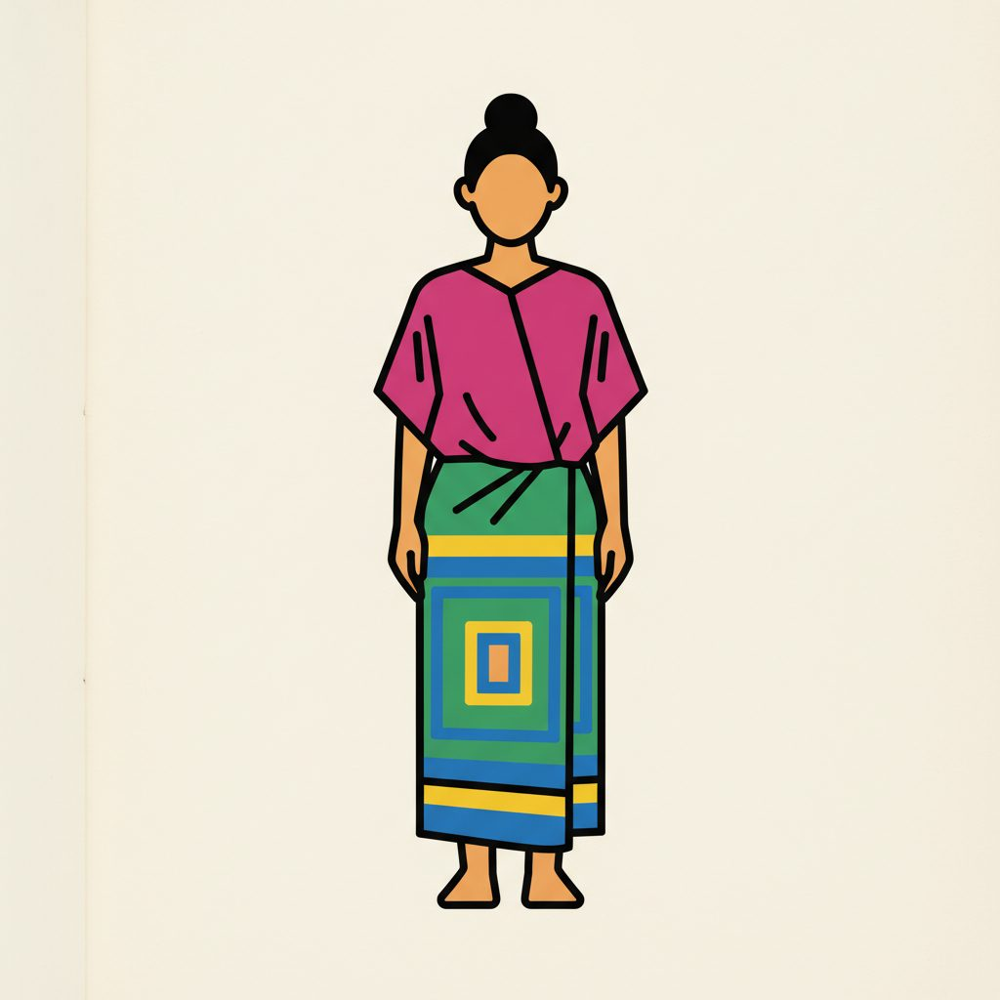
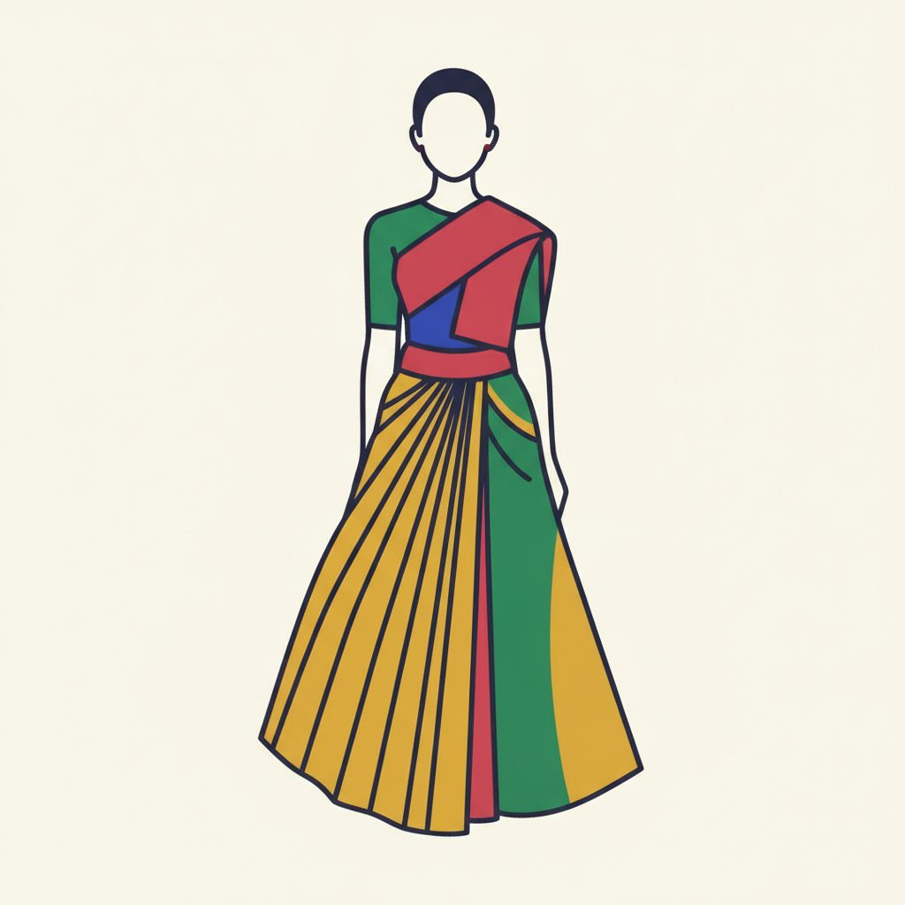
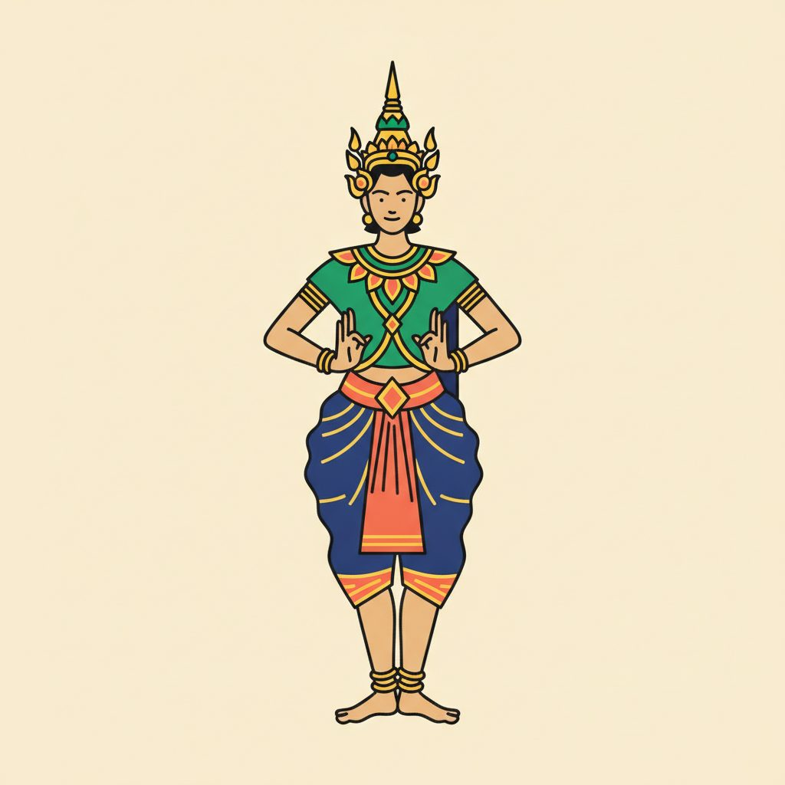
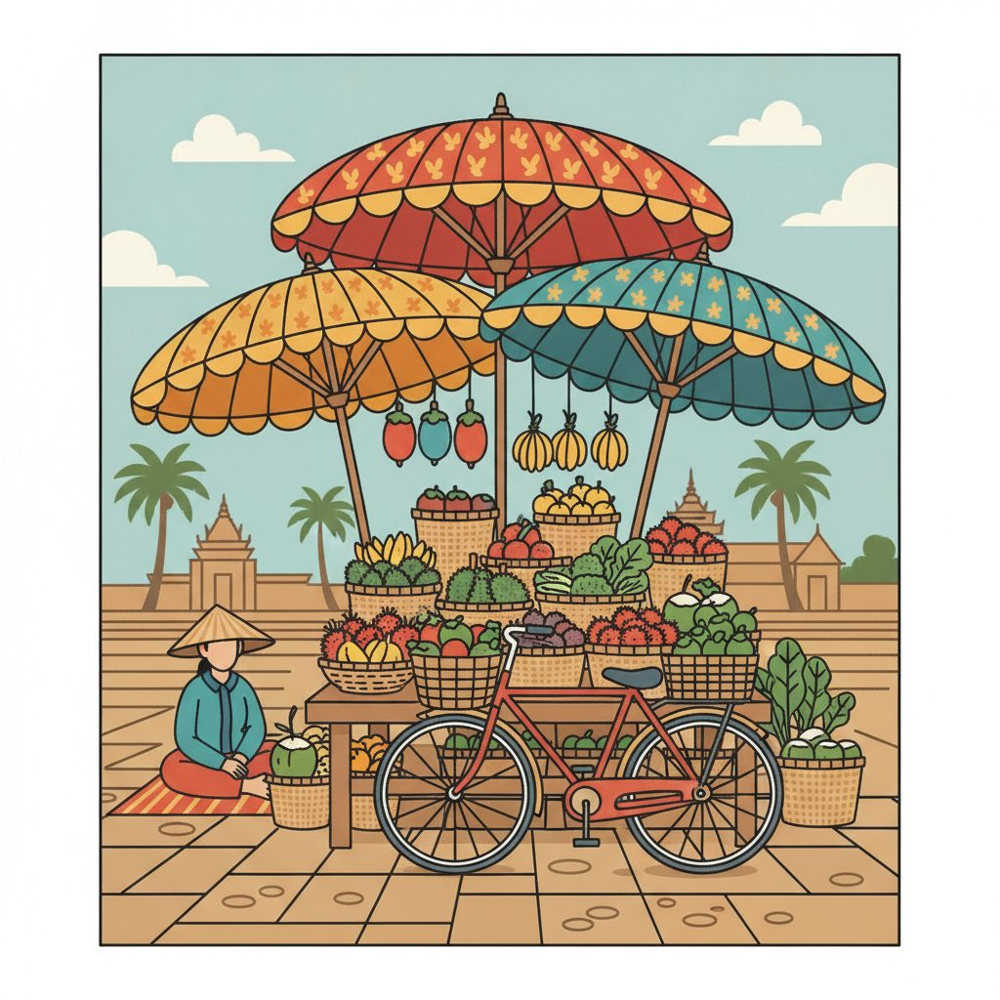
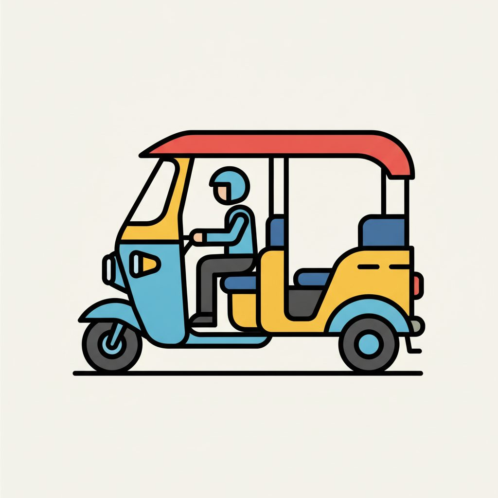
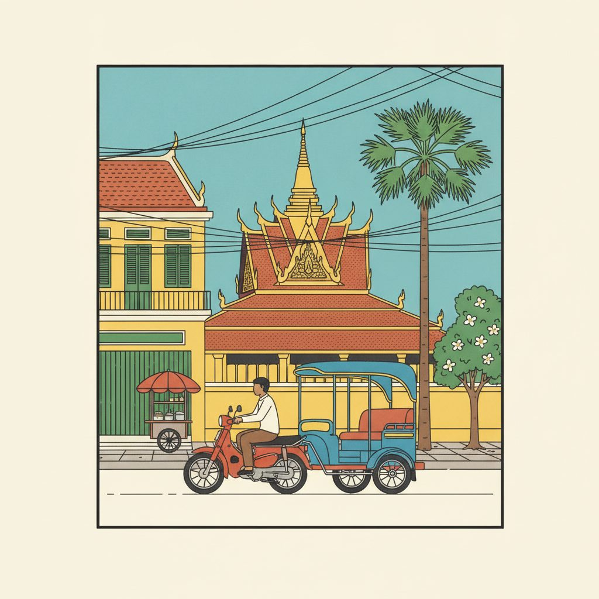
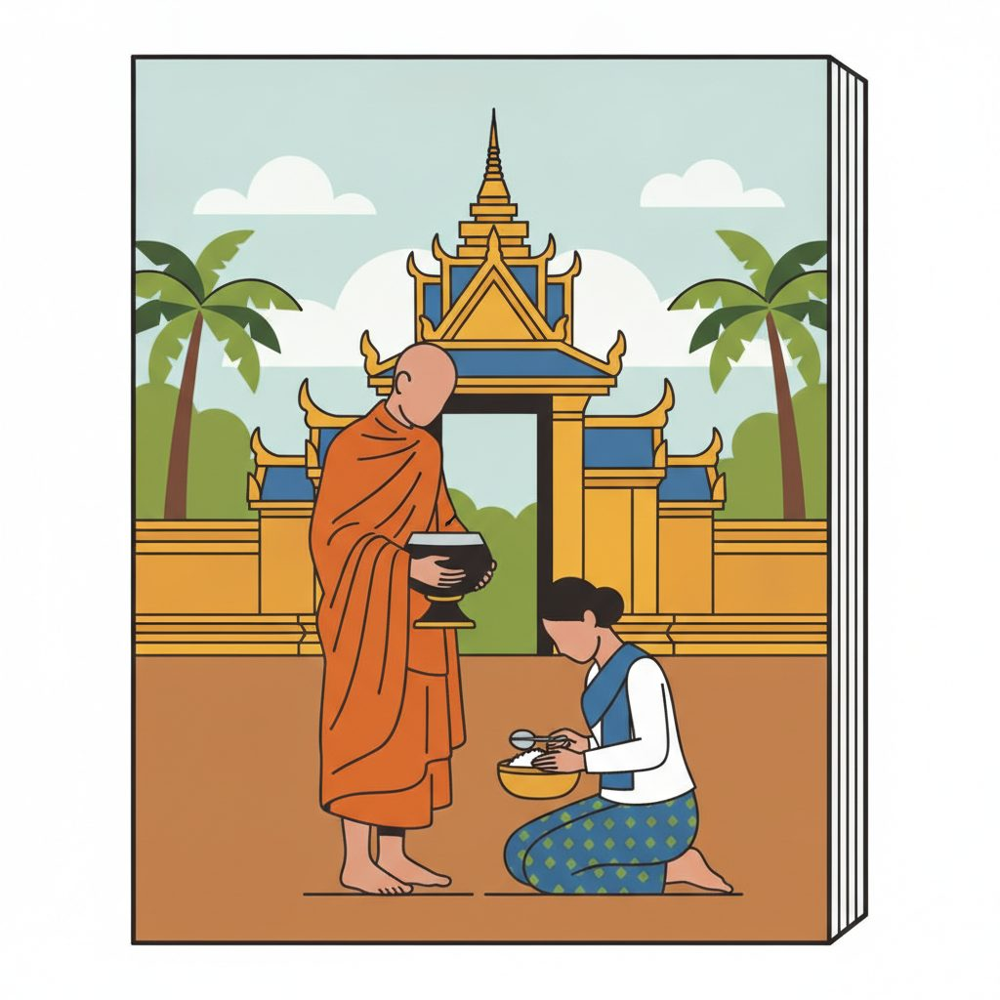

あいさつから順に、日常でよく使う言い方を覚えます。
あいさつ
【会った時】
【別れる時】
| ជម្រាបសួរ | còmrèˑəp suo | チュムリアップ スオ | こんにちは。はじめまして。 |
| សុខ សប្បាយ | sok sapbaːi | ソク サバーイ | （形）元気、健康な。 |
| ទេ | tèː | テー | （文末）疑問文をつくる |
| ចាស | caːh | チャー | はい（女性） |
| បាទ | baːt | バート | はい（男性） |
| អរគុណ | ʔɔːkun | オークン | (名)ありがとう。 |
បាទ バート（男性）と ចាស チャー（女性）は、①はい（質問に対する肯定の返事）②呼びかけに対する返事。
【親しい言い方】
| សួស្តី | suosdəi | スオスダイ | こんにちは |
| លាសិនហើយ | liˑə sən haəi | リアサンハウイ | さようなら |
| ជំរាបលា | còmrèˑəp liə | チュムリアップ リア | さようなら |
カンボジア人は、挨拶をする時に両手を合わせて少しおじぎをします。
カンボジアではこのជម្រាបសួរチュムリアップ スオを一日中使います。もちろんカンボジア語にもおはよう、こんばんはの語がありますが、書き言葉や、演劇などの芸術関係でしか使いません。
初対面の時の挨拶「はじめまして」も、このជម្រាបសួរチュムリアップ スオを使います。
日本では家族、子供や親しい人に「おはよう」と声をかけますが、カンボジアではជម្រាបសួរチュムリアップ スオと言うよりも、「朝ごはん食べた？」「顔を洗った？」のように声をかける方が一般的です。
親しい人達の間では、「លាហើយ !リア ハウイさようなら！」とも使います。
小テスト ⑦
習ったところの確かめです。答えは次のページにあります。
小テスト ⑦ 答え
～の名前は～です。
| សូមទោស | soːmtòh | ソームトー | すみません。ごめんなさい。 |
| ឈ្មោះ | cʼmʷɔ̀h | チュモホ | (名)名前 |
| អ្នក | nɛ̀ək | ネアック | （代）あなた、（名）（あの、この）人、～する人 |
| អ្វី | ʔavəi | アヴァイ | （疑問）何（書き言葉） |
| អី | ʔəi | アイ | （疑問）何（普段の会話で使う） |
| ខ្ញុំ | kʼɲom | クニョム | （代）私 |
| ចុះ | coh | チョホ | （文頭）では～ |
原則として文末に置かれます。
「誰々の名前は～です」と言う場合、「です」に当たる動詞ជាチアは使いません。
| មិន | mɯn | ムン | （否定）否定文を作る |
| ទេ | tèː | テー | （文末）疑問文をつくる |
| មែន | mɛ̀ːn | メーン | （形）本当の |
| ឬ | rɯː | ルー | （文末）文末に置いて疑問文を作る |
| គាត់ | kɔət | コアット | （代）彼・彼女 |
មិនមែនムン メーン～ +ទេテーの形をとります。
会話では、ឬルーを省略し、語尾を上げて質問します。
名前を聞く時のように、質問の中にいくつかの選択肢が含まれる場合はឬルーを使います。（例えば「あなたの名前は さんですか？」と聞く時は、「それとも他の違う名前？」という意味も含まれて○○いるのでឬルーを使います）このような意味合いのない一般の疑問はទេテーという文末詞を文末に置いて作ります。このឬルーは、少し疑っている、迷っている気持ちを含んでいます。
質問に対する肯定の返事「はい」は、បាទバート（男）／ចាសチャー（女）否定の返事｢いいえ｣はបាទទេバート テー（男）／ចាសទេチャー テー（女）と答えます。
カンボジアであいさつをするときは、胸の前で手を合わせて軽くおじぎをします。これをソムペアッ（សំពះ）といいます。
合わせた手の高さには意味があります。相手が目上であるほど、手を高く上げます。 同年代の友だちなら胸のあたり、年長者や先生には口のあたり、お坊さんにはひたいのあたりです。
迷ったら、胸のあたりで手を合わせておけば失礼になりません。日本人がおじぎの角度をあまり気にしないのと同じで、普段の生活ではそこまで厳密ではありません。
～は～人（じん）です
| ជនជាតិ | cɔ̀nciˑət | チョンチアット | （名）民族、～人（じん） |
国名は、そのままの形でその国の人（～人）も意味します。
会話では単に「“主語”＋“国名”」を使います。（例）ខ្ញុំជប៉ុនクニョム ﾁｮポン私は日本人です。
ជា ជនជាតិチア チョンチアットは、省略出来ます。（例）ខ្ញុំមិនមែនជប៉ុនទេクニョム ムン メーン チャポン テー私は日本人ではありません。
| គាត់ | kɔət | コアット | （代）彼・彼女 |
国 名
～国というときはប្រទេសプロテヘを付ける。例）ប្រទេស កម្ពុជាプロテヘカンプチア
アメリカ人はអាមេរិកាំងアメリカン、（アメリカは、អាមេរិកアメリッ（ク））
～は～（職業）です。 ①
| អ្នក | nɛ̀ək | ネアック | （代）あなた、（名）（あの、この）人、～する人 |
| ក្នុង | knoŋ | クノン | （前）（時間、場所の）中 |
| កាសែត | kasaet | カサエト | （名）新聞 |
| ក្រុមហ៊ុន | kromhon | クロム フン | （名）会社 |
| រត់ | rɔ̀t | ロット | （動）走る |
| សុីក្លូ | sikloː | シクロー | （名）シクロー |
| លក់ | lʷɔ̀k | ルオック | 売る |
| ដូរ | doː | ドー | 換える |
ធ្វើトブー（動）するធ្វើការトブーカー（動）働く。勤める「②の意味のអ្នកネアック（名）人＋“仕事を表す動詞又は名詞”」で職業を表します。
～は～（職業）です。 ②
| និស្សិត | nisət | ニサット | （名）大学生 |
| បង្រៀន | bɔŋriˑən | ボングリエン | （動）教える |
| ប៉ូលីស | polih | ポリヒ | （名）警察。警官 |
| កសិករ | kasekɔː | カセコー | （名）農民 |
| ពេទ្យ | pèːt | ペート | （名）医者 |
（例）ខ្ញុំធ្វើគ្រូពេទ្យクニョム トブー クルー ペート私は医者です。
| វិស្វករ | visvakɔː | ヴィッスバッコー | （名）エンジニア |
| ខុស | kʼoh | コホ | （形）間違っている |
| ទទួល | tɔ̀tuol | トトゥオル | （動）受ける |
| ត្រូវ | trəw | トラウ | （形）正しい |
| ទទួល ខុស ត្រូវ | tɔ̀tuol kʼoh trəw | トトゥオル コホ トラウ | 責任をとる |
会話ではជាチアはよく省略されます。（例）ខ្ញុំមិនមែននិស្សិតទេクニョム ムン メーン ニサット テー私は大学生ではありません。
これは～（名詞）です。
| នេះ | nih | ニヒ | （代）これ、この |
| នោះ | nuh | ヌフ | （代）それ、あれ、その、あの |
| តុ | tok | トッ | （名）机 |
| កៅអី | kawʔəi | カウアイ | （名）椅子 |
| ខ្មៅ ដៃ | kʼmaw dai | クマウ ダイ | （名）鉛筆 |
| សាលារៀន | salaː riˑən | サーラー リエン | （名）学校 |
សៀវភៅスィウパウ（名）本វចនានុក្រមヴァッチャナーヌクロー（ム）（名）辞書
普段の会話では、「ស្អីហ្នឹង ?スアイヌン何でしょうか？」を使います。もっとくだけた言い方の「នេះស្អីニ（ヒ）スアイこれ何？」もよく使います。
学校សាលារៀនサーラー リエンは、会話では短縮形សាលាサーラーがよく使われます。នេះជាអ្វី ?ニヒ チア アヴァイនេះគឺអ្វីニヒ クー アヴァイも使います
～は私の～（名詞）です。
| សំបុត្រ | sɔmbot | ソムボット | （名）手紙 |
| រូបថត | ruːptʼɔːt | ループトート | 写真 |
| របស់ | rɔ̀bɔh | ロボホ | （前）～の所有 |
| ទាំងអស់ | tɛ̀əŋ ʔɔh | テアン オホ | 全部 |
| អ្នកណា | nɛ̀ək naː | ネアックナー | 誰 |
| ហ្នឹង | nɯŋ | ヌン | （代）これ、それ |
名詞又は代名詞の前にរបស់ロボホを置くことにより、所有を表します。
「誰の～ですか？」と聞くには、របស់ロボホの後にអ្នកណា ?ネアックナーを置くだけです。
នេះ ជា សំបុត្ររបស់អ្នកណាហ្នឹង ?ニヒ チア ソムボット ロボホ ネアック ナー ヌンさらに文末に「ហ្នឹងヌン」を置くとやわらかい質問のニュアンスが生まれます。
普段の会話では、「របស់អ្នកណាហ្នឹង ?ロボホ ネアック ナー ヌンこれ誰のもの？」や、「របស់អ្នកណា ?ロボホ ネアック ナーこれ誰のもの？」が、よく使われます。
単に「誰の（もの）です」と言うには、「របស់ロボホ＋“（代）名詞”」です。(例)របស់ខ្ញុំロボホ クニョム私のです。 ／របស់លីណាロボホ リナーリナーのです。
| ប្រលោមលោក | prɔlaomlòːk | プロラオムローク | （名）小説 |
| សរសេរ | sɔseː | ソーセー | （動）書く |
| សៀវភៅ សរសេរ | siəw pʼə̀w sɔseː | スィアウパウ ソーセー | （名）ノート |
| ផ្ទះ | pʼtɛ̀əh | プテアッ | （名）家 |
| អីវ៉ាន់ | ʔəívan | アイヴァン | （名）物 |
| គាត់ | kɔət | コアット | （代）彼・彼女 |
小テスト ⑧
習ったところの確かめです。答えは次のページにあります。
小テスト ⑧ 答え
カンボジアでは、相手を名前だけで呼ぶことがあまりありません。自分より年上なら「ボーン（បង）」、年下なら「プオーン（ប្អូន）」を名前の前に付けます。
これは家族の中だけの言い方ではありません。店員さん、同僚、初対面の人にも使います。だから会話の最初に「何歳ですか」と聞かれることがよくあります。失礼な質問ではなく、どう呼べばいいかを決めるためです。
年齢が分からないときは、見た目が自分より年上そうならボーンを使っておくと安全です。
～（名詞）は～です。
| ផែន ដី | pʼaen dəi | パエン ダイ | 地球 |
| មូល | muːl | ムール | （形）丸い |
| សម្ល | sɔmlɔː | ソムロー | （名）スープ |
| ឆ្ងាញ់ | cʼŋaɲ | チガニュ | （形）美味しい |
| ធាតុអាកាស | tʼiˑət ʔaːkah | ティエト アーカハ | 天候、気候 |
| ស្រុក | srok | スロック | （名）国、故郷 |
| ត្រជាក់ | trɔcɛ̀ək | トロチェア | （形）冷たい、涼しい |
| ក្តៅ | kdaw | クダウ | （形）暑い、熱い |
| ស្អាត | sʔaːt | スアート | （形）美しい、せいけつ |
| តូច | toːc | トーチ | （形）小さい |
| បន្ទប់ | bɔntɔ̀p | ボントップ | （名）部屋 |
| ណាស់ | nah | ナハ | （副）とても、非常に、大変 |
| កន្លែង | kɔnlaeŋ | コンラエン | （名）場所、所 |
| ស្ងាត់ | sŋat | スガット | （形）静かな |
カンボジア語では、形容詞は状態を表す動詞としての機能を持っているので「“名詞”＋“形容詞”」の形では、「～は～です」という意味の文になります
| ត្រី | trəi | トライ | （名）魚 |
| ស្រស់ | srɔh | スロホ | （形）①新鮮な・みずみずしい ②美しい |
形容詞文の疑問は、文末に疑問の文末詞ទេテーを置くだけです。
～より～です。
| ជាង | ciˑəŋ | チアン | （接）～よりも、以上 |
| អាយុ | ʔaːyuʔ | アーユ | （名）年齢 |
| ច្រើន | craən | チュラウン | （形）沢山の、多量の |
| គេ | kèː | ケー | （代）彼、彼等（自分をも含む不特定を指すことができる） |
| បង្អស់ | bɔŋʔɔh | ボンオホ | （副）一番（最も）～です。 |
| គាត់ | kɔət | コアット | （代）彼・彼女 |
～を持っています。
| មាន | miˑən | ミエン | （動）持っている、～ある |
| ហើយ | haəi | ハウイ | （文末、完了）もう |
| ការ | kaː | カー | （名）用、用事、仕事 |
| រឿង | rɯˑəŋ | ルアン | （名）事件 |
| សំខាន់ | sɔmkʼan | ソムカン | （形）重要な |
| កូន | koːn | コーン | （名）子供 |
| របស់ | rɔ̀bɔh | ロボホ | （名）物、品物 |
| បង ប្អូន | bɔːŋ pʔoːn | ボーン プオーン | （名）兄弟（姉妹） |
| ជូន | cuːn | チューン | （動）与える（目上に）（丁寧） |
| ៧ | pram piː | プラム ピー | （数）７ |
| គ្រោះ ថ្នាក់ | krʷɔ̀h tʼnak | クルオホ タナック | 事故 |
| នាក់ | nɛ̀ək | ネアック | （名）～人（にん） |
| ប្រពន្ធ | prɔpʷɔ̀n | プロポン | （名）奥さん、妻 |
| គាត់ | kɔət | コアット | （代）彼・彼女 |
| គ្មាន | kmiˑən | クミエン | （動）～が無い。存在しない。 |
| សំនួរ | sɔmnuo | ソムヌオ | （名）質問 |
| ពេល | pèːl | ペール | （名）時、時間 |
| ទូរស័ព្ទ ដៃ | tuːrəsap dai | トゥールサップ ダイ | （名）携帯電話、スマホ |
អត់ មានオット ミエンが「ある物（事）の、全体の中の一部が無い」と言うのに対して、គ្មានクミエンは、「その全体がすべて無い」と言っています。
～へ（又は～しに）行きます。
| ទៅ | tə̀w | タウ | （動）行く |
| ណា | naː | ナー | （疑問）どこ |
| រៀន | riˑən | リエン | （動）習う |
| ញុាំ | ɲam | ニャム | （動）食べる。飲む |
| ភាសា | pʼèˑəsaː | ピアサー | （名）言語 |
| ខ្មែរ | kʼmae | クマエ | （名）カンボジア |
| ផ្សារ | pʼsaː | プサー | （名）市場 |
| ជួប | cuop | チュオップ | （動）会う |
| លេង | lèːŋ | レーン | （動）遊ぶ |
ទៅញុាំការタウ ニャム カーは、結婚式におよばれしています
| ជាមួយ | ciˑəmuoi | チアムオイ | （前）～と（一緒に） |
អត់オットは普通の否定ですが､មិនムンは、～したくないというニュアンスを表す時（例えば誘いを断る時）などによく使います。
「～しに行く」は､「ទៅタウ行く」の後に動詞を続けます。
文脈や状況により、人を誘うニュアンスが強くなります。
答えは、単に「行きます」と答えるにはទៅタウ「行かない」と答えるにはអត់ទៅទេオット タウ テー又は、「行きたくない」というニュアンスを出す時は、មិនទៅទេムン タウ テーを使います。
～（場所）から来ました。
| មក | mɔ̀ːk | モーク | （動）来る（話し手の方へ近づく） |
| ខេត្ត | kʼaet | カエット | （名）州 |
| ពី | piː | ピー | （前）から |
| បាត់តំបង | batdɔmbɔːŋ | バッドムボーン | （名）州の名、バッタンバン州 |
| អូតែល | ʔoːtael | オータエル | （名）ホテル |
| ការិយាល័យ | kariyalai | カーリヤーライ | （名）事務所、オフィス |
| ពួកម៉ាក | puokmaːk | プオクマーク | （名）友達、仲間 |
会話では「អូតែលオタエルホテル」、書き言葉や看板ではសណ្ឋាគារソンターキア。
「ពួកម៉ាកプオクマーク友達」の代わりに「មិត្តムッ（ト）友達」、という語も使います。
～はどこですか？どこにいますか？
| នៅ | nə̀w | ナウ | （動）①～にある、いる。②住む、暮らす、泊まる |
| ឯ | ʔae | アエ | （前）（場所を示す）～に |
| ណា | naː | ナー | （疑問）どこ |
| កើត | kaət | カウト | （動）①生まれる。（名）東 |
| កំណើត | kɔmnaət | コムナウト | （名）誕生、発生 |
| ស្រុក កំណើត | srok kɔmnaət | スロック コムナウト | 出身地、出生地 |
| ចត | cɔːt | チョート | （動）駐車する |
| ឡាន | laːn | ラーン | （名）自動車 |
| កន្លែង | kɔnlaeŋ | コンラエン | （名）①場所、所、②～店 |
| សណ្ឋាគារ | sɔntʼaːkiˑə | ソンターキア | （名）ホテル（正式） |
| ម្តុំ | mdom | ムドム | （前）～辺りに |
このように、物や人がある（居る）場所を示すにはនៅナウと言う動詞を使います。
場所を聞く時は、ឯណាアエ ナーの代わりに「ម្តុំណា ?ムドム ナーどこの辺りですか？」 又は、「កន្លែងណា ?コンラエン ナーどこですか？」も良く使います。
「កន្លែងធ្វើការコンラエン トブー カーオフィス」は普段の会話で使います。正式には「ការិយាល័យカリヤライ」になります。
小テスト ⑨
習ったところの確かめです。答えは次のページにあります。
小テスト ⑨ 答え
ここ あそこ
| នោះ | nuh | ヌフ | (代)あちら、あそこ |
| ក្រៅ | kraw | クラウ | （前）～の外に |
| ទី | tiː | ティー | （助）序数を作る助詞 |
| ក្រោម | kraom | クラオム | （前）の下（場所、地位）に |
| ជិត | cɯt | チット | （形）近い |
| លើ | lə̀ː | ルー | （前）の上に |
| ក្នុង | knoŋ | クノン | （前）（時間、場所の）中に |
| មុខ | muk | ムック | （名）①顔 ②表 ③前 |
| ក្បែរ | kbae | クバエ | （前）の近くに |
| ក្រោយ | kraoi | クラオイ | （前）の後ろに |
| ខាង | kʼaːŋ | カーン | （名）側 |
～にあります。います。
| មន្ទីរពេទ្យ | mʷɔ̀ntiːpèːt | モンティーペート | （名）病院 |
会話をしている人の間で、主語が何を指しているかはっきりしている場合は、នៅ の前の主語は省略できます。省略しないでそのまま言ってもかまいません。
（例）ផ្សារ នៅ ម្តុំ នោះ 市場は、あの辺りにあります。
～（場所）に～（名詞）があります。
| តែ | tae | タエ | （接）しかし、だが |
| មាន | miˑən | ミエン | （動）在る |
| ថ្លៃ | tʼlai | タライ | （形）高価な |
| បន្តិច | bɔntec | ボンティ | （副）少し、ちょっと |
| ផ្ទះ | pʼtɛ̀əh | プテアッ | （名）家 |
| សំណាក់ | sɔmnak | ソムナック | （動）休息する・泊まる（名）休息所・宿泊所 |
この文は、前置詞នៅナウ～で示されている「場所」が話の中心であり、その「場所」に何が存在するかを説明する文です。
ここでមានミエンは、「ある」「存在する」という意味の動詞です。「存在するもの」が、このមានミエンの後に置かれるのが通常の型です。
| ថោក | tʼaok | タオク | （形）安い |
～を知っていますか？
| ស្គាល់ | skɔəl | スコアル | （動）（人、道、場所を）知っている |
| ផ្លូវ | pʼləw | プラウ | （名）道 |
| ថ្មី | tʼməi | タマイ | （形）新しい |
| ផ្សារ ថ្មី | pʼsaː tʼməi | プサー タマイ | （名）セントラルマーケット |
| បង | bɔːŋ | ボーン | （名）兄、姉（自分より年上） |
| បងស្រី | bɔːŋ srəi | ボーン スライ | 姉 |
肯定の答は「ស្គាល់スコアル知っています」、否定の答は「អត់ស្គាល់ទេオット スコアル テー知りません」
小テスト ⑩
習ったところの確かめです。答えは次のページにあります。
小テスト ⑩ 答え
数字
カンボジアの数字は、１～５までが基本型。６～９は、５＋１．２．３．という言い方をします。
| លេខ | lèːk | レーク | （名）①数字 ②番号 |
１０～１９は、「ドッ（プ）１０」＋「１～９」という言い方です。
２０～９９は、「２０．３０．４０．．．」＋「１．２．３．．．」という言い方です。
１００以上は、位ごとに名前があります。百は រយ、千は ពាន់、万は ម៉ឺន、十万は សែន、百万は លាន です（読み方は下の表を見てください）。
並べ方は日本語と同じで、大きい位から順に言います。たとえば ３５２ なら「３百 ５十 ２」、５，６４３ なら「５千 ６百 ４十 ３」の順です。
小テスト ⑪
数字のおさらいです。答えは次のページにあります。
小テスト ⑪ 答え
クメール語の数字は1から5までが基本で、6から9は「5＋1」「5＋2」…という作り方をします。6は ប្រាំមួយ（5＋1）、7は ប្រាំពីរ（5＋2）です。
この数え方を五進法といいます。なぜ5なのか。いちばんよく言われるのは、片手の指が5本だからという説明です。片手で5まで数え、そこから先は「5と、もう1本」と数えていった名残だ、というわけです。
となりのタイ語には6〜9の専用の語があります。これは中国語から入った数詞だと言われていて、もとの数え方は置きかわりました。クメール語は、古い五進法の数え方をそのまま残していることばの1つです。
慣れるまでは数を聞き取るのに時間がかかりますが、しくみが分かれば覚える語は少なくて済みます。市場で値段を聞き取れるようになると、買い物が一気に楽しくなります。
今日は何曜日ですか？
会話ではថ្ងៃនេះជាタガイ ニヒ チアはよく省略されます。
日付と曜日と同時に言う時は、曜日、日、月、年の順です。（例）ថ្ងៃសុក្រ ទី១០ ខែមិថុនា ឆ្នាំ២០០៦タガイ ソック ティー ドップ カエ ミトナー チュナム ピー ポアン プラム ムオイ2006 年6 月１0 日金曜日です。
続けて言うときにはថ្ងៃタガイを省略します（日本語の「月火水木金土日」と同じ）
今日は、何日ですか？
| ថ្ងៃ | tʼŋai | タガイ | （名）日 |
| ខែ | kʼae | カエ | （名）月 |
| ថ្ងៃ នេះ | tʼŋai nih | タガイ ニヒ | 今日は |
| ទី | tiː | ティー | （助）序数を作る助詞 |
| ឆ្នាំ | cʼnam | チナム | （名）年 |
| ប៉ុន្មាន | ponmaːn | ポンマーン | （名）いくつ、いくら |
日を表すには序数を使い、月と年は普通の数を使います。
年、月、日を同時に言う時は、日本とは逆に日、月、年の順に言います。
月名
第～番目（序数）
| ជាន់ | cɔən | チョアン | （名）階 |
| បត់ | bɔt | ボット | （動）曲がる |
| ផ្លូវ | pʼləw | プラウ | （名）道 |
| ប៉ុន្មាន | ponmaːn | ポンマーン | （数）いくつ、いくら |
(例)បត់ទៅផ្លូវទីប៉ុន្មាន ?ボット タウ プラウ ティー ポンマーン何番目の道を曲がるんですか？
Ｘ 時 Ｙ 分です。
| ម៉ោង | maoŋ | マオン | （時刻の）～時 |
| ប៉ុន្មាន | ponmaːn | ポンマーン | （疑問）いくつ |
| កន្លះ | kɔnlah | コンラハ | （数）半分 |
| ហើយ | haəi | ハウイ | （文末）もう。完了の意味を表す。 |
| ព្រឹក | prɯk | プルック | （名）朝 |
| នាទី | niˑətiː | ニアティー | （名）分（時刻の、時間） |
| រសៀល | rɔ̀siˑəl | ロスィアル | （名）午後 |
| ល្ងាច | lŋiˑəc | ルギアイ | （名）夕方 |
| យប់ | yɔ̀p | ヨップ | （名）夜 |
| ត្រង់ | trɔŋ | トロン | （形）まっすぐな |
ហើយハウイ は省略出来ますが、省略しない言い方が普通です。この場合ហើយハウイ の完了の意味は、それほど強くありません。
「今何時ですか？」と聞くには、文頭に「ឥឡូវនេះエイロウニヒ（副）今」をつけますが、普段はあまり使いません。
「ថ្ងៃ់ត្រង់タガイ トロン正午」昼に太陽が天頂にきて、太陽の光がまっすぐに自分をさして自分の影が見えない、その時間帯を指します。田舎で農業を営んでいる人達には、今もこの日時計の習慣が残っています。
何時に～しますか？
| ចេញ | ceɲ | チェン | （動）出る |
| យន្ត | yʷɔ̀n | ユン | （名）機械 |
| ត្រូវ | trəw | トラウ | （助動）～しなければならない |
| ហោះ | hɔh | ホッ | （動）飛ぶ |
| ត្រឡប់ | trɔlɔp | トロロップ | （動）帰る |
| យន្ត ហោះ | yʷɔ̀n hɔh | ユン ホッ | （名）飛行機 |
| វិញ | vèɲ | ヴィン | （前）帰る、戻る反対方向に、逆に、という |
| ដល់ | dɔl | ドル | （動）到着する 意味を表す補助語 |
| បើក | baək | バウク | （動）開く、開ける、つける |
| ត្រឡប់ មក | trɔlɔp mɔ̀ːk | トロロップ モーク | 帰ってくる |
いくつ（いくら）ですか？
| ថ្លៃ | tʼlai | タライ | （名）価格 |
| អាយុ | ʔaːyuʔ | アーユ | （名）年齢 |
| ទាំងអស់ | tɛ̀əŋ ʔɔh | テアン オホ | 全部、全て |
| ត្រូវការ | trəwkaː | トルーカー | （形）～が必要だ、～が欲しい |
いくつ（いくら）～しますか？
| យក | yɔ̀ːk | ヨーク | （動）取る、買う |
| រាក | riˑək | リアック | （動）下痢する |
| អង្ករ | ʔɔŋkɔː | オンコー | （名）米 |
| ដង | dɔːŋ | ドーン | （名）～回 |
値段の話では、百（រយ）・千（ពាន់）・万（ម៉ឺន）がよく出てきます。さらに大きい位は、十万が សែន、百万が លាន です。
リエルは桁が大きいので、「千」と「万」をすぐ言えるかどうかで買い物のしやすさが変わります。
聞き取りのコツは、最初の数字に集中することです。「4」と聞こえたら4000リエル（約1ドル）、という具合に、だいたいの見当がつきます。
紙に書いてもらうのも、まったく失礼ではありません。
昨日、今日、明日
| ＜Ａ＞ いつの時間帯か | ＜Ｂ＞ どの日か | つなげると |
|---|---|---|
| ព្រលឹមprɔ̀lɯmプロルム明け方（まだ少し暗い） | ម្សិល ម៉ៃ្ងmsəl mŋaiムサル ムガイおととい | おとといの明け方 |
| ព្រឹកprɯkプルック朝、午前 | ម្សិល មិញmsəl meɲムサル メニュ昨日 | 昨日の朝 |
| រសៀលrɔ̀siˑəlロスィアル昼、午後（３時頃まで） | ថ្ងៃ នេះtʼŋai nihタガイ ニヒ今日 | 今日の午後 |
| ល្ងាចlŋiˑəcルギアイ夕方（４時頃から日没６時頃まで） | ស្អែកsʔaekスアエク明日 | 明日の夕方 |
| យប់yɔ̀pヨップ夜 | ខាន ស្អែកkʼaːn sʔaekカーン スアエクあさって | あさっての夜 |
同じ日の近い未来は、「ហ្នឹងヌンこれ」を使った表現もよく使われます。ព្រឹកហ្នឹងプルック ヌンこの朝＝今朝 … 話をしている時点より後の午前中を指す。ល្ងាចហ្នឹងルギアイ ヌンこの夕＝今夕 … 話をしている日の夕方を指す。យប់ហ្នឹងヨップ ヌンこの夜＝今夜… 話をしている日の夜を指す。
近い過去は「មិញメニュ直前の」を使って、次のように言います。ព្រឹកមិញプルック メニュ今朝… 話をしているヒの朝の出来事を話す時に使うល្ងាចមិញルギアイ メニュ今日の夕方… 話をしている日の夕方の出来事を話す時に使うយប់មិញヨップ メニュ昨夜… 翌朝、前の日の夜の出来事を話すときに使う
小テスト ⑫
習ったところの確かめです。答えは次のページにあります。
小テスト ⑫ 答え
先週、今週、来週
| 組み合わせ | មុនムン 過去 | នេះニヒ 現在 | ក្រោយクラオイ 未来 |
|---|---|---|---|
| អាទិត្យアートゥット 週 | អាទិត្យ មុនʔaːtɯt munアートゥット ムン先週 | អាទិត្យ នេះʔaːtɯt nihアートゥット ニヒ今週 | អាទិត្យ ក្រោយʔaːtɯt kraoiアートゥット クラオイ来週 |
| ខែカエ 月 | ខែ មុនkʼae munカエ ムン先月 | ខែ នេះkʼae nihカエ ニヒ今月 | ខែ ក្រោយkʼae kraoiカエ クラオイ来月 |
| ឆ្នាំチナム 年 | ឆ្នាំ មុនcʼnam munチナム ムン昨年 | ឆ្នាំ នេះcʼnam nihチナム ニヒ今年 | ឆ្នាំ ក្រោយcʼnam kraoiチナム クラオイ来年 |
| លើកルーク 回 | លើក មុនlə̀ːk munルーク ムン前回 | លើក នេះlə̀ːk nihルーク ニヒ今回 | លើក ក្រោយlə̀ːk kraoiルーク クラオイ次回 |
| អាទិត្យ | ʔaːtɯt | アートゥット | （名）週 |
| ក្រោយ | kraoi | クラオイ | （名）（場所、時間の）後、以降 |
| មុន | mun | ムン | （名）（時間の）前、以前 |
នេះ（この）のかわりに ហ្នឹង を使うこともできます。たとえば「今週」は អាទិត្យ នេះ でも អាទិត្យ ហ្នឹង でも通じます。
数え方 ①
名詞＋数＋単位……単位が必要なものには、慣習によるものと、単位を明らかにしないと量が確定できないものとがある。
| រាប់ | rɔəp | ロアプ | （動）数える |
| ស្រា | sraː | スラー | （名）酒 |
| ដប | dɔːp | ドープ | （名）ビン |
| ទឹក ដោះ គោ | tɯk dɔh kòː | トゥック ドホ コー | （名）ミルク |
| មនុស្ស | mnuh | モヌッフ | （名）人（ひと） |
| កំប៉ុង | kɔmpoŋ | コムポン | （名）缶 |
| នាក់ | nɛ̀ək | ネアック | （名）～人（にん） |
| បាយ | baːi | バーイ | （名）ご飯、食事 |
| ក្រដាស | krɔdah | クロダッ | （名）紙 |
| ដី | dəi | ダイ | （名）土地、地球 |
| ចាន | caːn | チャーン | （名）皿 |
| សន្លឹក | sɔnlək | ソンラック | （名）（葉、紙、板）枚 |
| គោ | kòː | コー | （名）牛 |
| ក្បាល | kbaːl | クバール | （名）①頭 ②（本）～冊 |
| សាប៊ូ | sabuː | サブー | （名）石鹸 |
| ដុំ | dom | ドム | （名）（石鹸、石、パン）～個、塊 |
| ទឹក | tɯk | トゥック | （名）水 |
| កែវ | kaew | カエウ | （名）ガラスのコップ |
数え方 ②
口語ではよく単位が省略されるもの。単位が省略されても意味は同じ。
単位をつけないと意味が変わる（ひとつひとつの物を指すようになる）もの。
数＋単位 時間、お金、距離等を表すとき……
| ស្និត | snət | スナット | （名）（バナナの）房 |
| ចង្កឹះ | cɔŋkəh | チョンカハ | （名）箸 |
| រៀល | riˑəl | リエル | （名）リエル（カンボジア通貨の単位） |
| គូ | kuː | クー | （名）ペア |
| គីឡូ | kiloː | キロー | （名）キロ（グラム、メートル） |
| បារី | barəi | バライ | （名）タバコ |
| ម៉ែត្រ | maet | マエト | （名）メートル |
| កញ្ចប់ | kɔɲcɔp | コンチョップ | （名）包、小包 |
| បាច់ | bac | バッチ | （名）束 |
| ប្រអប់ | prɔʔɔp | プロオップ | （名）箱 |
| ចង្កោម | cɔŋkaom | チョンカオム | （名）房 |
| ចេក | ceːk | チェーク | （名）バナナ |
どうぞ～して下さい。（丁寧な命令）
| អញ្ជើញ | ʔɔɲcə̀ːɲ | オンチューニュ | （助）どうぞ（動詞の前に置いて相手に対する敬意を表す） |
| ចូល | coːl | チョール | （動）入る |
| ភ្លែត | pʼlɛ̀ːt | プレート | （名）瞬間 |
| អង្គុយ | ʔɔŋkui | オンクイ | （動）座る |
| មួយ ភ្លែត | muoi pʼlɛ̀ːt | ムオイ プレート | 一寸、パッと |
| ពិសា | pisaː | ピサー | （動）（敬語）食べる、飲む |
| មុជ | muc | ムッチ | （動）潜水する |
| ចាំ | cam | チャム | （動）待つ |
| សិន | sən | サン | （助）まず～せよ。 |
អញ្ជើញオンチューニュを省略すると強い命令になります。
អញ្ជើញオンチューニュの前にសូមソーム（どうぞ）をつけると非常に丁寧な命令になります。
さあ～して下さい。（促す命令）
| មុខ | muk | ムック | （名）顔。前、前方 |
| យំ | yum | ヨム | （動）泣く |
| ប្រញាប់ | prɔɲap | プロニャップ | （動）急ぐ |
| អោយ | ʔaoi | アオイ | （動）与える、もらう |
| ញុាំ | ɲam | ニャム | （動）食べる ～してもらう／（助動）[使役]～させる、②もっと |
| បាយ | baːi | バーイ | （名）ご飯 |
| ធ្វើ អោយ | tʼvə̀ː ʔaoi | トブー アオイ | ～させる |
| លុប | lup | ルップ | （動）洗う |
| ឆាប់ | cʼap | チャップ | （形）早い、速い |
あいさつのあと、カンボジアではよく「ごはん食べた？（ញុាំ បាយ ហើយ នៅ ？）」「どこ行くの？」と聞かれます。本当に知りたいわけではなく、日本語の「どうも」に近い声かけです。
返事は「食べました」「ちょっとそこまで」で十分。会話を続ける必要はありません。
この一往復ができると、ぐっと距離が縮まります。
～するな！（禁止）
| កុំ | kom | コム | （助動）（禁止を表す）～しないように、 |
| ណា៎ | naː | ナー | （文末）ね（念を押す感じ） |
| ឆាឆៅ | cʼacʼaw | チャーチャウ | （動）邪魔する |
| ភ្លេច | pʼlèc | プレッチ | （動）忘れる |
| ប្រយ័ត្ន | prɔyat | プロヤット | （動）注意する |
| ពាក្យ | piˑək | ピアック | （名）①単語 ②（話した）言葉 |
| សន្យា | sɔnnaʔyaː | ソンナヤー | （動）約束する |
| ទឹក | tɯk | トゥック | （名）水 |
| ឆៅ | cʼaw | チャウ | （形）生の、煮えていない |
| ឈឺ | cʼɯː | チュー | （動）痛む |
| ពោះ | pʷɔ̀h | ポホ | （名）腹 |
កុំコムのまえにសូមソーム（どうぞ～して下さい）をつけると丁寧な禁止の命令になります。
あまり～しすぎないで！
| កុំ | kom | コム | （助動）（禁止を表す）～しないで |
| ជក់ | cʷɔ̀k | チュオク | （動）吸う |
| ពេក | pèːk | ペーク | （副）あまりにも～すぎる、非常に、極めて |
| បារី | barəi | バライ | （名）タバコ |
| ស្រា | sraː | スラー | （名）酒 |
| តឹង រឹង | təŋ rəŋ | タン ラン | （形）厳しい |
| ឡាន | laːn | ラーン | （名）自動車 |
| លឿន | lɯˑən | ルアン | （形）速い |
| បើក | baək | バウク | （動）（車を）運転する |
～して下さい（指示）。
| សូម | soːm | ソーム | （頭）どうか～して下さい |
| ចាំ | cam | チャム | （動）待つ |
| ឥឡូវ | ʔəiləw | エイロウ | （頭）今 |
| មួយ ភ្លែត | muoi pʼlɛ̀ːt | ムオイ プレート | 一寸 |
| ថា | tʼaː | ター | （動）言う |
| ដាស់ | dah | ダハ | （動）起こす |
| តាម | taːm | ターム | （動）後について（言う） |
| ជួប | cuop | チュオップ | （動）会う、出会う |
| មួយៗ | muoi muoi | ムオイ ムオイ | （形）一つずつ、ゆっくりゆっくり |
この｢ៗ｣という記号は、日本語の「々」と同じ意味です。同じ語の繰り返しを避けるために使われます。発音は、その前にある語を繰り返します。同じ単語を2回繰り返すことで強調か複数の意味があります。
小テスト ⑬
習ったところの確かめです。答えは次のページにあります。
小テスト ⑬ 答え
～してもいいですか？（依頼）
| សុំ | som | ソム | （動）求める、要求する |
| ផង | pʼɔːŋ | ポーン | （文末）どうか一緒に～して下さい |
| បាន ទេ | baːn tèː | バーン テー | ～もいいですか？（相手の気持を気にして） |
| សួរ | suo | スオ | （動）質問する |
| ថត | tʼɔːt | トート | （動）（写真を）撮る |
| រូប | ruːp | ループ | （名）姿、イメージ |
答は、肯定はបានバーンいいですよ。 否定はអត់បានទេオット バーン テーいけません。だめ！
～を下さい。
| សុំ | som | ソム | （動）求める、要求する（丁寧なお願い） |
| មក | mɔ̀ːk | モーク | （動）来る（話し手の方へ近づく） |
| អោយ | ʔaoi | アオイ | （動）与える、もらう |
| យក | yɔ̀ːk | ヨーク | （動）取る、持って（来る、行く） |
| សាច់គោ | sackòː | サッチコー | （名）牛肉 |
| កាហ្វេ | kaːfeː | カフェー | （名）コーヒー |
| ប៊ីយ៉ែ | biyɛ̀ː | ビヤー | （名）ビール |
| គុយទាវ | kuytiˑəw | クイティアウ | （名）お米から作ったうどん |
| ទៀត | tiˑət | ティエット | （副）更に、もう一つ、もう少し（量、時間）、もう一回 |
～が痛い。
| ខ្លួន | kʼluon | クルオン | （名）身体 |
| ក្បាល | kbaːl | クバール | （名）頭 |
| បាក់ | bak | バック | （動）折れる |
| ខ្លាំង | kʼlaŋ | クラン | （形）強い、濃い |
| ជើង | cə̀ːŋ | チューン | （名）足 |
| ចុក | cok | チョック | （動）キリキリ痛む |
| ផ្តាសាយ | pʼdah saːi | プダサーイ | （名）風邪 |
| ក្តៅ | kdaw | クダウ | （形）熱 |
| ធ្មេញ | tʼmèɲ | トメニュ | （名）歯 |
| គាត់ | kɔət | コアット | （代）彼・彼女 |
体の～が痛い…等、という場合には､「主語」＋「痛い」等の形容詞、又は「動詞」 ＋「体の部分を示す名詞」という表現を使います。
体の部分を示す名詞は、その前に置かれる形容詞の補語です。
បាក់バックは「折れる」という自動詞です。故意に折るわけではないので、このような時は自動詞を使い ます。
～するのが難しい、易しい。
| ភាសា | pʼèˑəsaː | ピアサー | （名）言語 |
| ឆ្លើយ | cʼlaəi | チラウイ | （動）答える |
| ពិបាក | pibaːk | ピバッ | （形）難しい、～しにくい、不便な、困る |
| ពូកែ | puːkae | プーカエ | （形）上手な |
| ស្រួល | sruol | スルオル | （形）容易な、易しい、優しい、便利 |
| អង់គ្លេស | ʔɔŋkʼlèːh | オンクレー | （名）英語 |
| ម៉ាសុីន | masiːn | マシーン | （名）機械 |
| ឆាប់ | cʼap | チャップ | （形）早い、速い |
| ប្រើ | praə | プラウ | （動）用いる、使用する |
| ខឹង | kʼəŋ | カン | （動）怒る |
| គាត់ | kɔət | コアット | （代）彼・彼女 |
動詞は、そのままの形で形容詞の後に置かれて、その形容詞の意味内容を補う場合があります。「クメール語は難しい」という主語＋形容詞の形の文に「សរសេរソーセー書く」を付加すると「クメール語を書くのが難しい」という意味になります。
否定は、形容詞の方を否定の形にして、「〜くありません。」とします。
はく、着る、結ぶ
| ស្លៀក | sliˑək | スリアク | （動）はく |
| ចង | cɔːŋ | チョーン | （動）結ぶ |
| ពាក់ | pɛ̀ək | ペアック | （動）着る |
| ក្បិន | kbən | クバン | （名）カンボジアの民族衣装 |
| អាវ | ʔaːw | アーウ | （名）シャツ、ブラウス、上着 |
| មួក | muok | ムオック | （名）帽子 |
| ស្រោម ជើង | sraom cə̀ːŋ | スラオム チューン | （名）靴下 |
| ស្បែក ជើង | sbaek cə̀ːŋ | スバエク チューン | （名）靴 |
| នាឡិកា | nèˑəliʔkaː | ネアリカー | （名）時計 |
| ចិញ្ចៀន | ceɲciˑən | チェンチアン | （名）指輪 |
| សារុង | saroŋ | サロン | （名）サロン（筒状の布を腰に巻く） |
| សំពត់ | sɔmpʷɔ̀t | ソムポット | （名）ソムポット（布を巻いて前でひだを作る） |
| ខោ | kʼao | カオ | （名）ズボン |
| ខ្យែ | kʼsae | クサエ | （名）ひも |
| ក្រវាត់ ក | krɔvat kɔː | クロヴァット コー | （名）ネクタイ |
| វ៉ែនតា | vaentaː | ヴァエンター | （名）眼鏡 |
ស្លៀកスリアクは下半身に使い、ズボン、スカート、ソムポット、パンツなどを身に着けることを指します。ពាក់ペアックは、下半身に巻くもの以外のすべてに使い、（帽子を）かぶる、（イアリング、ネックレス、指輪、ブレスレットを）着ける。(シャツ、上着などを)着る、（靴、靴下を）履く、ことを指します。
（ネクタイを）する、（ヘアバンドを）する、（靴紐を）結ぶは、ចងチョーンです。
ចងដៃチョーンダイ結婚した新郎新婦へのお祝いのプレゼント、おもにお金が渡されます。
ក្បិនクバン大きな一枚布を腰に巻きつけ、余った部分を折り巻き、細長くして、それを前から後ろに股を通して腰でとめます。舞踊や征服の日結婚の時にが着ているのを見て下さい。



誰（と・を・の）～ですか？ ／ 誰が～ですか？
| នឹក | nɯk | ヌック | （動）思う、考える |
| អ្នកណា | nɛ̀ək naː | ネアックナー | （名）誰 |
| របស់ | rɔbɔh | ロボホ | （名）品物 |
| រក | rɔ̀ːk | ローク | （動）探す（前）～へ、めざして |
| រៀបការ | riˑəpkaː | リエプカー | 結婚する |
| គាត់ | kɔət | コアット | （代）彼・彼女 |
カンボジアでは米ドルとリエル（រៀល）の両方が使われます。値段はドルで表示されていることが多く、1ドル未満のおつりがリエルで返ってきます。
目安は1ドル＝4000リエル。3ドル50セントの買い物に5ドル札を出すと、1ドル札1枚と2000リエル札1枚が返ってくる、という感じです。
近年はQRコード決済（ABAなど）が急速に広がっていて、屋台でもスマホで払えることが増えました。現金を使う場面は年々減っています。
誰が～ですか？
| ហ្នឹង | nɯŋ | ヌン | （代）これ、それ |
| ទូរស័ព្ទ | tuːrəsap | トゥールサップ | 電話 |
| តិច | tec | ティッ | （形）少し・少ない・小さい |
| ជាង | ciˑəŋ | チアン | （接）～よりも、以上 |
| យល់ | yʷɔ̀l | ヨル | （動）分かる |
| ដៃ | dai | ダイ | （名）手 |
発音が少し違うだけで通じないことがあります。そんなときは、次の3つが効きます。
ゆっくり、短く、単語で。 文を作ろうとせず、いちばん大事な語だけを言います。「市場（ផ្សារ）」「いくら（ប៉ុន្មាន）」だけでも通じます。
書いて見せる。 数字は書けば確実です。
身ぶりを足す。 恥ずかしがらずに手を使うと、伝わる率が上がります。
何でもいいです。
| ក៏ | kɔː | コー | （助）も、でさえも |
| ជិះ | cih | チヒ | （動）乗る |
| ណា | naː | ナー | （代）どこ |
| ចង់ | cɔŋ | チョン | （助動）～したい |
「何か」「どこか」は、もともと「何？」「どこ？」とたずねる語です。ここでは中身をはっきり決めずに「何か〜」「どこか〜」「誰か〜」と指す使い方をしています。
まとめて「どれでもいいです」と言うときは、មួយ ណា ក៏ បាន ដែរ（ムオイ ナー コー バーン ダエ）とも言えます。
どれですか？
| ណា | naː | ナー | （疑問）どれ、どれか |
| សង្សារ | sɔŋsaː | ソンサー | （名）恋人、いいなずけ |
| មួយ ណា | muoi naː | ムオイ ナー | どれ |
| ចូលចិត្ត | coːlcət | チョールチャット | 好む、好きだ |
| វ៉ាលីស | valiː | ヴァリー | （名）スーツケース |
答は、「មួយនេះムオイ ニヒこれです。」、「មួយនោះムオイ ヌフあれです。」
複数
| ខ្លះ | kʼlah | クラハ | （副）（複数を示す） |
| ថា | tʼaː | ター | （動）～と（言う） |
| ហៅ | haw | ハウ | （動）呼ぶ、注文する |
| ម៉េច | mec | メッチ | （副）何と（言う、読む）か？ |
| ម្ហូប | mhoːp | ムホープ | （名）食べ物、料理 |
| ចេះ | ceh | チェヘ | （動）知る、知識がある |
| គាត់ | kɔət | コアット | （代）彼・彼女 |
カンボジア語の名詞や疑問詞は、単数でも複数でも同じ形ですが、特に複数を示す必要がある 場合は、ខ្លះクラハを後に付けます。（疑問を表す語と一緒に使って不特定の複数を表します。）
小テスト ⑭
習ったところの確かめです。答えは次のページにあります。
小テスト ⑭ 答え
（今）私は～をしています。
| កំពុង | kɔmpoŋ | コムポン | （助動）（今）～している |
| មើល | mə̀ːl | ムール | （動）見る |
| ធ្វើ ម្ហូប | tʼvə̀ː mhoːp | トブー ムホープ | 料理をする |
| ទូរទស្សន៍ | tuːrətʷɔ̀h | トゥーラトホ | （名）テレビ |
| អក្សរ | ʔaksɔː | アクソー | （名）文字 |
| ជក់ | cʷɔ̀k | チュオク | （動）吸う |
いつ～しますか？（未来）
| វិញ | veɲ | ヴィン | （副）戻る |
| គិត | kɯt | クット | （動）考える |
| អង្កាល់ | ʔɔŋkal | オンカル | （名）いつ（未来に） |
| ជួប | cuop | チュオップ | （動）会う |
| ឆ្លង | cʼlɔːn | チローン | （動）渡る |
| ទន្លេ | tʷɔ̀nlèː | トンレー | （名）川 |
| ចូល | coːl | チョール | （動）入る |
| ឆ្លង ទន្លេ | cʼlɔːn tʷɔ̀nlèː | チローン トンレー | 出産する |
| សង | sɔːŋ | ソーン | （動）返す |
| សៀមរាប | siˑəmriˑəp | シェムリアップ | （地名）シェムリアップ |
会話ではអង្កាល់オンカルがよく使われますが、ពេលណាペール ナー（公式の時）も使われます。
「ឆ្លងទន្លេチローン トンレー出産する」川を渡る。こちら岸からあちら岸へ渡るまでに、深い所、水の流れの速い所があるかもしれません。難しく、命を失うこともあります。出産も同じように大変なことだという意味です。
～します、～するでしょう（未来）。～するつもりです（意思）
| នឹង | nɯŋ | ヌン | （助動）未来を示す |
| ឪពុក ម្តាយ | ʔəwpok mdaːi | アウプック マダーイ | （名）両親 |
| គ្នា | kniˑə | クニア | （副）お互いに |
| សម្រេច ចិត្ត | sɔmrac cət | ソムラッチ チャット | （動）決める、決心する |
| ជា មិន ខាន | ciˑə mɯn kʼaːn | チア ムン カーン | 必ず～ |
| ពេល | pèːl | ペール | （名）時、時間 |
| ឆ្នាំ ក្រោយ | cʼnam kraoi | チナム クラオイ | （名）来年 |
| ក្នុង ពេល | knoŋ pèːl | クノン ペール | 近いうちに |
| ឪពុក | ʔəwpuk | アウプック | （名）父 |
| ឆាប់ ៗ | cʼap cʼap | チャップ チャップ | （副）すぐに |
| ម្តាយ | mdaːi | マダーイ | （名）母 |
カンボジア語の動詞には、時刻の変化が無く、従って未来形もありません。未来を示す語（副 詞など）を文中に使うことで未来を示します。しかし、特に「未来」（過去における未来を含む）を示したい時は、នឹងヌンを動詞の前に置きます。文脈により「～するつもり」という 意志を表すこともあります。
主語が三人称や無生物の場合にនឹងヌンを使うと「～でしょう」という、やや不確実なニュアンスになります。

考える、しようと思う
| គិត | kɯt | クット | （動）考える、～しようと思う |
| ជិះ | cih | チヒ | （動）（車に）乗る |
| បង | bɔːŋ | ボーン | （代）あなた（呼びかけ 参照） |
| ថា | tʼaː | ター | （接）～と |
| ត្រូវ | trə̀w | トラウ | （形）正しい |
| និយាយ លេង | niːyèˑəi lèːŋ | ニジェイ レーン | （動）冗談を言う |
| អូន | ʔoːn | オーン | （代）あなた（呼びかけ 参照） |
| ឈ្នួល | cʼnuol | チュヌオル | （名）借貸・料金・（汽車・バス） |
| ឡាន ឈ្នួល | laːn cʼnuol | ラーン チュヌオル | 乗合バス |
いつ～しましたか？（過去に）
| ស្លាប់ | slap | スラップ | （動）死ぬ |
| គ្រោះ ថ្នាក់ | krʷɔ̀h tʼnak | クルオホ タナック | 事故 |
| ពី | piː | ピー | （前）～から、（過去）から、以来 |
| រស់ | rʷɔ̀h | ロホ | （動）生きる。生活する。暮す。 |
| ពី អង្កាល់ | piː ʔɔŋkal | ピー オンカル | いつ（過去に） |
| ដល់ | dɔl | ドル | （動）到着する |
| ជម្ងឺ | cumŋɯː | チュムグー | （名）病気 |
| តាំង ពី | taŋ piː | タン ピー | から（時間、物、場所、事柄）～以来 |
観光客が行くような市場では、値札が出ていないことがよくあります。まず値段を聞き、必要なら少し交渉する、というのが普通の買い方です。
といっても、強く値切るのは好かれません。笑顔で1回聞いてみて、だめならそれで買うくらいがちょうどよい距離感です。
スーパーマーケットやコンビニは定価です。交渉する場面ではありません。
～しました。（過去）
| បាន | baːn | バーン | （助動）（動作が行なわれたことを示す） |
| ថត រូប | tʼɔːt ruːp | トート ループ | 写真を撮る |
| អនុស្សាវរីយ៍ | ʔanusaːvəriː | アヌッサーヴァリー | （名）記念、思い出 |
| ជា ច្រើន | ciˑə craən | チア チュラウン | （副）たくさん、豊富に |
| បន្តិច បន្តួច | bɔntec bɔntuoc | ボンティ ボントゥオッチ | ほんの少し |
カンホジア語の動詞には、時制の変化が無く、従って過去形もありません。過去を示す副詞などを文中に用いて過去を表します。（例）ឆ្នាំមុនខ្ញុំទៅស្រុកជប៉ុនチナム ムン クニョム タウ スロック チャポン私は去年日本に行きました。しかし、過去の出来事であることを示すには、助動詞បានバーン（動詞としては、持つ、得る、という意味）もよく使われបានバーン＋動詞で、～する＋機会があった（～した）、という意味になります。
もう～しました（完了）
| ហើយ | haəi | ハウイ | （文末）もう（完了） |
| ដេក | deːk | デーク | （動）寝る |
| ដល់ | dɔl | ドル | （動）（時刻季節、程度）になる、達する |
| ខាន | kʼaːn | カーン | （動）～しそこなう、～しない |
| ឆ្អែត | cʼʔaet | チアエト | （動）満腹になる |
| ឃើញ | kʼə̀ːɲ | クーニュ | （動）見える |
カンボジア語の動詞には時制の変化が無く、従って完了形もありませんが、完了の意味を表すには、文末にហើយハウイをつけます。
もう～しましたか？
| ហើយ ឬ នៅ | haəi rɯː nə̀w | ハウイ ルー ナウ | もう～しましたか？ |
| ឬ | rɯː | ルー | （文末）文末に置いて疑問文を作る |
| អក្សរ | ʔaksɔː | アクソー | （名）文字 |
| ស្រួលបួល | sruolbuol | スルオルブオル | きちんと、ちゃんと |
| ចេះ | ceh | チェヘ | （動）（学習、訓練の結果）できる |
| យល់ | yʷɔ̀l | ヨル | （動）わかる・理解する |
| ព្រម | prɔ̀ːm | プローム | （動）同意する |
| ចប់ | cɔp | チョップ | （動）終わる |
会話ではឬルーが省略されហើយ នៅハウイ ナウとなる。
否定の答は単に「នៅទេナウ テーまだです」で十分です。
まだ～していません。
| មិន ទាន់ | mɯn tɔən | ムン トアン | （助）まだ～していない、まだ～しない |
| ងងុយ | ŋɔ̀ŋui | ンゴングイ | （形）ねむたい |
| កប៉ាល់ | kɔpal | カパル | （名）（エンジンのある）船 |
| សាច់ | sac | サッチ | （名）食肉 |
| ឆ្អិន | cʼʔən | チアン | （動）煮えた、焼けた |
長い間～していません。
| ខាន | kʼaːn | カーン | （動）～しそこなう、～しない |
| យូរ | yuː | ユー | （形）長い、久しい |
| ទាក់ ទង | tɛ̀ək tɔ̀ːŋ | テアク トーン | 関係がある。連絡する。交際する。 |
小テスト ⑮
習ったところの確かめです。答えは次のページにあります。
小テスト ⑮ 答え
たった今～したばかりです。
| ទើប នឹង | tə̀ːp nɯŋ | トゥープ ヌン | ～したばかり |
| ល្ខោន | lkʼaon | ルカオン | （名）芝居 |
| ចាប់ ភ្លឹក | cap pʼlɯk | チャップ プルック | 思いつく、気付く |
| ផ្តើម | pʼdaəm | プダウム | （動）始める、発案する |
| អម្បិញមិញ | ʔambeɲmeɲ | アムベンメン | （副）たった今、今しがた |
| លេង | lèːŋ | レーン | （動）上演する |
| ចប់ | cɔp | チョップ | （動）終わる |
| ចាប់ ផ្តើម | cap pʼdaəm | チャップ プダウム | （動）始める、始まる |
| ចេញ | ceɲ | チェン | （動）出る |
会話では「អម្បិញមិញហ្នឹងアムベンメンヌンたった今」は、“動詞”＋“動詞”＋「មិញ ហ្នឹងメン ヌンたった今」のように、短縮されて使われます。
～したことがありますか？
| ដែល | dael | ダエル | （助動）（経験を示す）～したことがある |
| ឃើញ | kʼə̀ːɲ | クーニュ | （動）見える |
| ប្រទេស | prɔtèh | プロテヘ | （名）国 |
| របាំ | rɔ̀bam | ロバム | （名）踊り |
| ក្រៅ | kraw | クラウ | （前）～の外に |
| ប្រពៃណី | prɔpèiniː | プロペイニー | （名）習慣、伝統 |
ដែល は動詞の前に置いて経験を表します。「〜したことがありますか？」とたずねるときと、「一度も〜したことがない」と打ち消すときによく使います。
打ち消すときは ដែល の前に អត់ を置き、文末に ទេ を置きます（អត់ ដែល 〜 ទេ ＝ 一度も〜したことがない）。
「〜したことがあります」と答えるときは ធ្លាប់（トロアップ）を使います。たずねるときに ដែល ធ្លាប់ と2つ重ねることもよくあります。
しばしば（よく）～する。
| ឧស្សាហ៍ | ʔussaː | ウッサー | （助動）しばしば～する |
| ញឹក ញាប់ | ɲɯk ɲɔəp | ニュック ニョアップ | （形）しばしば |
| កុន | kon | コン | （名）映画 |
| យូរ | yuː | ユー | （形）長い・久しぶり |
否定（あまり～しない）は、មិនឧស្សាហ៍ムン ウッサーの否定よりもមិនសូវムンサウ～ទេテーをよく使います。
時々
| ជួនកាល | cuon kaːl | チュオン カール | 時々 |
| ម្តង | mdɔːŋ | ムドーン | （名）一度、一回 |
| ពេល ខ្លះ | pèːl kʼlah | ペール クラハ | 時々 |
| កីឡា | kəilaː | ケイラー | （名）スポーツ |
いつも
| នៅ តែ | tə̀w tae | ナウ タエ | いまでも～、依然として～ |
| ជានិច្ច | ciˑənèc | チアネッチ | （副詞）いつも、常に |
| នឹក | nɯk | ヌック | （動）思う |
| ស្រឡាញ់ | srɔlaɲ | スロラニュ | （動）愛する、可愛がる |
プノンペンの移動はトゥクトゥクが便利です。最近は PassApp や Grab といった配車アプリが普及し、乗る前に値段が決まるので安心です。
道で拾うときは、乗る前に行き先と値段を決めます。あとから言うと話がこじれます。
雨季の夕方は道が渋滞し、冠水することもあります。急ぐ用事があるときは早めに出るのが無難です。

普通
| ប្រជាជន | prɔciˑəcʷɔ̀n | プロチアチョン | （名）人民、国民 |
| បរិភោគ | bɔripʼòːk | ボリポーク | （動）食べる、飲む（書き言葉） |
| រាល់ ថ្ងៃ | rɔəl tʼgai | ロアル タガイ | 毎日 |
～のおかげで、～の理由で。
| ដោយ | daoi | ダオイ | （前）～の理由で、～で |
| ឈប់ | cʼɔ̀p | チョップ | （動）止まる、やめる |
| ដោយ សារ | daoi saː | ダオイ サー | （接）～のおかげで、～のせいで |
| គ្រួសារ | kruosaː | クルオサー | （名）家族、～世帯 |
| រស់ | rʷɔ̀h | ロホ | （動）生きる、生活する |
| ក្រ | krɔː | クロー | （形）貧しい、貧乏な |
| ចិញ្ចឹម | ceɲcəm | チェンチャム | （動）養う、育てる |
この課の ដោយ សារ（ダオイ サー）は、「～のおかげで」「～のせいで」と理由を言うときに使います。
単語欄にある ដោយ（ダオイ）だけでも理由は表せますが、うしろに来るものがちがいます。ដោយ のうしろは名詞がひとつ、というのがふつうです（「病気で」「事故で」のように、原因をひと言で言うとき）。ដោយ សារ のうしろには、この課の例文のように「家族がとても貧しい」と、主語と動詞のそろった文がまるごと来ます。
ただし ដោយ のうしろに短い文が来ることもあります。あとの課に出てくる「人に殺された（ស្លាប់ ដោយ គេ សម្លាប់）」がその形です。はっきり「～なので」と理由を立てたいときは ដោយ សារ、「～で」とひと言で言えるときは ដោយ。まずはこれで足ります。
～で（場所）
| ភ្នំពេញ | pʼnom pèɲ | プノムペン | （地名）プノンペン |
| កើត | kaət | カウト | （動）生まれる |
カンボジアの学校も、日本と同じように小・中・高・大学に分かれています。中学校と高校は、頭に អនុ（アヌ 下の）が付くかどうかの違いだけなので、まとめて覚えると楽です。大学の言い方は2つあり、この課の例文に出てくる「プノンペン大学」は、いまのカンボジアでは សាកលវិទ្យាល័យ（総合大学）と呼ぶほうが正確です。
プノンペンでいちばん古い総合大学が、王立プノンペン大学（សាកលវិទ្យាល័យ ភូមិន្ទ ភ្នំពេញ サーコル ヴィッチアライ プーミン プノムペン）です。1960年にできた国立の大学で、英語の頭文字を取って RUPP と呼ばれます。日本語を教える学科もあり、日本語を話すカンボジア人の多くがここの出身です。カンボジア人と話していて「ルップ」と聞こえたら、この大学のことです。
| 日本語 | クメール語 | カタカナ | 覚え方 |
|---|---|---|---|
| 小学校 | សាលាបឋមសិក្សា | サーラー パトマサクサー | |
| 中学校 | អនុវិទ្យាល័យ | アヌ ヴィッチアライ | 高校に アヌ（下の）が付くだけ |
| 高校 | វិទ្យាល័យ | ヴィッチアライ | |
| 単科大学・学部 | មហាវិទ្យាល័យ | モハーヴィッチアライ | 1つの分野だけ |
| 総合大学 | សាកលវិទ្យាល័យ | サーコル ヴィッチアライ | いくつもの学部を持つ |
～で（道具）
| នឹង | nɯŋ | ヌン | （前）～で |
| ស្លាបព្រា | slaːppriˑə | スラープリア | （名）スプーン |
| ចង្កឹះ | cɔŋkəh | チョンカハ | （名）箸 |
～で（原因）
| ដោយ | daoi | ダオイ | （前）（原因）で |
| សម្លាប់ | sɔmlap | ソムラップ | （動）殺す |
| ស្លាប់ | slap | スラップ | （動）死ぬ |
| ជម្ងឺ | cumŋɯː | チュムグー | （名）病気 |
| ហេតុ | haet | ハエト | （名）原因、理由 |
| មហារីក | mɔhaːriːk | ムハーリーク | （名）癌 |
～で（手段）
| តាម | taːm | ターム | （前）（手段）～で |
| កប៉ាល់ ទឹក | kɔpal tɯk | カパル トゥック | （名）船 |
| រទេះភ្លើង | rɔ̀tèh pʼlə̀ːŋ | ロテヘ プルーン | （名）汽車 |
| ផ្ញើ | pʼɲaə | プニャウ | （動）送る |
～に（目的）
| ដើម្បី | daəmbəi | ダウムバイ | （接）～する目的のために |
| ខំ | kʼɔm | コム | （連用）一生懸命～する |
| សន្សំ | sɔnsɔm | ソンソム | （動）貯める |
| កប៉ាល់ហោះ | kɔpal hɔh | コパル ホッ | （名）飛行機 |
～（誰々）に～（名詞）を～する
人の前には前置詞（ទៅ・អោយ）を入れます。ただし អោយ・បង្រៀន・ខ្ចី などの動詞のときは要りません。
③数量を表す語は、いちばん最後。「１万リエル」「２万」は人のうしろに置きます。
| ខ្ចី | kʼcəi | クチャイ | （動）借りる |
| ប្រាប់ | prap | プラップ | （動）告げる、知らせる、言う |
| រឿង | rɯˑəŋ | ルアン | （名）物語、話 |
| អាវ | ʔaːw | アーウ | （名）シャツ、ブラウス、上着 |
「だれかに何かを～する」という文では、クメール語は〈もの〉を先に、〈人〉をあとに置きます。「リナーさんに手紙を」と言う日本語とは逆の順です。
〈人〉の前には ទៅ（タウ）や អោយ（アオイ）を置きます。「ソカーさんはリナーさんに手紙を書きました」は ទៅ、「タリーさんはこのブラウスを私に買ってくれました」は អោយ を使っています。「言う」の文では ប្រាប់（プラップ 告げる）を同じ場所に置きます。
ただし អោយ と ខ្ចី がその文の動詞そのものであるときは、〈人〉の前に何も置きません。〈動詞〉＋〈もの〉＋〈人〉とそのまま続けます（「私は彼に１万リエルのお金をあげます」「ソカーさんは私に２万お金を借りました」）。
ខ្ចី（クチャイ）は借りるほうの動詞です。「貸す」と言いたいときはខ្ចី をそのまま使わず、អោយ（アオイ）＋〈人〉＋ ខ្ចី の形にします。この អោយ は「与える」ではなく「～させる」の意味なので、〈人〉がすぐうしろに来ます（「ソカーさんは私に２万お金を貸しました」）。借りたのか貸したのかは、この អោយ があるかどうかで見分けます。
この課の文では、数や量は文のいちばんうしろに付いています。ខ្ញុំ អោយ លុយ វា ១ មុឺន រៀល（私は彼に１万リエルのお金をあげます）は、「１万リエル」が最後に来ています。
～したい。／～したくない。／～したいですか？
| ចង់ | cɔŋ | チョン | （助動）～したい |
| អនុស្សាវរីយ៍ | ʔaːnusaːvəriː | アヌッサーヴァリー | （名）記念、思いで |
| ដើរ | daə | ダウ | （動）歩く |
| ដើរ លេង | daə leːŋ | ダウ レーン | 散歩する |
| វត្ថុ | vɔəttʼoʔ | ヴォット | （名）物、品物 |
| ជាមួយ | ciˑəmuoi | チアムオイ | ～と、一緒 |
小テスト ⑯
習ったところの確かめです。答えは次のページにあります。
小テスト ⑯ 答え
～が好きです／好きではありません。
| ចូលចិត្ត | coːlcət | チョールチャット | （動）好む |
| ស្វាយ | svaːi | スバーイ | （名）マンゴー |
| ដូង | doːŋ | ドーン | （名）ココナツ |
カンボジア語の動詞は、そのままの形で「～すること」という名詞としても使えるため、他の動詞の目的語になれます。例えば、មើលសៀវភៅムール スィアウパウは「本を読むこと」という一種の名詞句でもあるため、ចូលចិត្តチョールチャットの目的語になります。
補語にもなります。（例）គោលបំណងរបស់ខ្ញុំ គឺរកលុយコール ボムノーン ロボホ クニョム クー ローク ルイ私の目的はお金を稼ぐことです。
～できます。 ①
| អាច | ʔaːc | アーチ | （助動）～できる（可能、許可） |
| បាន | baːn | バーン | （動）～できる（可能、許可） |
| សំនួរ | sɔmnuo | ソムヌオ | （名）質問 |
| ស្តាប់ | sdap | スダップ | （動）聴く |
| ពាក្យ | piˑək | ピアック | （名）単語 |
| ឆ្លើយ | cʼlaəi | チラウイ | （動）答える |
| បក ប្រែ | bɔ̀ːk prae | ボーク プラエ | 通訳、翻訳 |
អាចアーチは、省略できます。「英語を聞いて少し話せる／ビータン好きではないけど食べられる」などの、「～だが可能です」の意味です。
បានバーンは動詞ですが、他の動詞に後に付いて「～できる」という意味を付け加える機能も持つています。
動詞＋បានバーンは可能（～できる）を表す一般的な言い方ですが、学習や経験の結果、可能となる動作は、（「ចេះチェヘ知っている」という意味の動詞）＋動詞の方を使います。
បានバーンは「អាចアーチ（助動）～できる」＋動詞＋បានバーンの形でも、បានバーンだけでも使われますが、意味は変わりません。 （例）ខ្ញុំទៅបានクニョム タウ バーン私は行けます。
～できません。
| ឆៅ | cʼaw | チャウ | （形）生の、煮ていない |
| ហូប | hoːp | ホープ | （動）食べる |
「動詞＋បានバーンの否定は、動詞＋មិនムン＋បានバーン＋ទេテーです。否定群មិនムンが動詞の前に来ない点を注意して下さい。
អាចアーチ＋動詞＋បានバーンの否定は、主語＋មិនムン＋អាចアーチ＋動詞～បានバーン＋ទេテー（例）ខ្ញុំមិនអាចទៅថ្ងៃនេះបានទេクニョム ムン アーチ タウ タガイ ニヒ バーン テー私は今日行けません。ですが会話では上の言いかたをよく使います。
～できますか？
～できます。 ②
| ប្រើ | praə | プラウ | （動）用いる、使用する。 |
| កុំព្យូទ័រ | kompyuːtə̀ː | コムピューター | （名）パソコン |
このように学習や経験の結果、ある動作をする能力があるかどうかを問題にする場合 には、ចេះチェヘ＋動詞を使うのが普通です。
| រាំ | rɔəm | ロアム | （動）踊る |
| ច្រៀង | criˑəŋ | チリエン | （動）歌う |
| ខ្លះ | kʼlah | クラハ | （形）少し |
日常会話では、肯定の答はចេះチェヘだけで、又否定の答はអត់ចេះទេオット チェヘ テーだけで十分です。
クメール正月（チョール・チナム・タマイ ＝ ចូលឆ្នាំថ្មី）は毎年4月の中ごろ、3日間ほど続きます。1年でいちばん暑い時期で、学校も会社も休みになります。
都市で働く人の多くが故郷に帰るので、プノンペンは静かになります。逆に地方はにぎやかで、水をかけ合ったり、粉を顔に塗り合ったりして遊びます。
この時期に旅行する場合、店が閉まっていることが多い点だけ気をつけてください。
～しなければならない（義務）
| ត្រូវ | trəw | トラウ | （助動）～しなければならない |
| ចាក់ | cak | チャック | （動）刺す |
| ថ្នាំ | tʼnam | タナム | （名）薬 |
| ខំ | kʼɔm | コム | （連用）一生懸命～する |
| ចាក់ ថ្នាំ | cak tʼnam | チャック タナム | 注射する。 |
| ប្រឹង | prəŋ | プラン | （動）努力する |
| រាល់ | rɔəl | ロアル | （数）毎（日、月、年）、各（人） |
| ខំ ប្រឹង | kʼɔm prəŋ | コム プラン | 一生懸命努力する |
| ប្រយ័ត្ន | prɔyat | プロヤット | （動）注意する、気をつける |
| សម្រាក | sɔmraːk | ソムラーク | （動）休息する |
| ពី | piː | ピー | （前）～について |
| គ្រប់ | krɔ̀p | クロップ | （形）充分の量、数 |
| សុខភាព | sokʼəpʼiˑəp | ソッカピアップ | （名）健康 |
| គ្រាន់ | krɔən | クロアン | （形）充分な、～にするに足りる |
| គ្រប់ គ្រាន់ | krɔ̀p krɔən | クロップ クロアン | 充分な、不足しない |
អោយ បាន（アオイ バーン）は、動詞のうしろに置いて「しっかり〜する」「ちゃんと〜しておく」という念押しを足す言い方です。この課の「よく休まなければなりません」「充分に食べなければなりません」がその形です。
អោយ បាន が無くても「たくさん休む」「充分に食べる」とは言えますが、それだと、ようすを説明しているだけになります。អោយ បាន を入れると「足りるところまでちゃんとやってください」と、相手に行動を求める言い方になります。お医者さんの指示や、人を気づかうときによく出てきます。
ត្រូវ（トラウ 〜しなければならない）と組にすると、「ត្រូវ 〜 អោយ បាន …」で「…になるまでしっかり〜してください」という形になります。体調の話でそのまま使えます。
～と（言う、思う、聞こえる･･･）（引用）
| ថា | tʼaː | ター | （接）～と（言う、考える） |
| ស្រឡាញ់ | srɔlaɲ | スロラニュ | （動）愛する、可愛がる |
| គេ | kèː | ケー | （代）彼（彼女）（名）一般の人々、他人 |
| ប្រាប់ | prap | プラップ | （動）告げる、知らせる、言う |
| ហៅ | haw | ハウ | （動）呼ぶ |
| ប្រហុក | prɔhok | プロホック | 生の塩漬け魚。カンボジアの独特な食べ物です。 |
| ប្រែ | prae | プラエ | （動）訳す |
| ឆ្លើយ | cʼlaəi | チラウイ | （動）答える、返事する |
ថាターは、「言う」や「思う」に関係する上の例のような特定の動詞の後に置かれて、引用 の意味（～と）を表します。
ថាターの前の特定の動詞の主語とថាターにより引用される文の意味上の主語が同じ時には、引用される文の主語は省略されます。
～何と(言う、思う、聞こえる･･･)か？
| ម៉េច | mec | メッチ | （副）何と（言う、読む、……）か？ |
| ថា ម៉េច | tʼaː mec | ター メッチ | ～何と(言う、思う、聞こえる･･･)か？ |
聴き取れない時にも使います。「ថាម៉េចター メッチえっ、何と言いましたか？」
（主語）は～と言いました。
| ថា | tʼaː | ター | （接）～と（引用） |
| ឃ្លាន | kʼliˑən | クリエン | （動）空腹だ |
| និយាយ | niːyèˑəi | ニジェイ | （動）言う、話す |
| ឆ្ងាញ់ | cʼŋaɲ | チガニュ | （形）美味しい |
| ត្រូវ | trəw | トラウ | （形）正しい |
| រវល់ | rɔ̀vʷɔ̀l | ロボル | （動）忙しい |
| មិន ត្រូវ ទេ | mɯn trəw tèː | ムン トラウ テー | 正しくない |
少し ⇔ たくさん
| ច្រើន | craən | チュラウン | （形）多量の、多数の |
| បាន | baːn | バーン | （助）～できる。（可能、能力、許可） |
| ស្តាប់ | sdap | スダップ | （動）言うことが分る |
「ចេះនិយាយខ្មែរទេ ?チェヘ ニジェイ クマエ テーカンボジア語が話せますか？」と聞かれ、少しだけ話せますと答えたいときは「ចេះនិយាយបានខ្លះៗチェ(ヘ) ニジェイ バーン クラ(ハ) クラ(ハ)少しできます。」と答えることもできます。
小テスト ⑰
習ったところの確かめです。答えは次のページにあります。
小テスト ⑰ 答え
あまり～ではありません。
| មិន សូវ | mɯn səw | ムン サウ | あまり～しない |
| ក្តៅ | kdaw | クダウ | （形）暑い、熱い |
| ហឹរ | həl | ハル | （形）（料理）辛い |
| ក្រូច | kroːc | クローチ | （名）オレンジ |
| ខ្លួន | kʼluon | クルオン | （名）身体、自分自身 |
| ច្បាស់ | cbah | チバハ | （形）はっきりした、明瞭な、確かな |
カンボジアでは「មិន ក្តៅ ទេムン クダウ テー暑くありません」と否定するよりも、មិនសូវムンサウを使って「あまり暑くありません」と、柔らかく否定するほうをよく使います。
そんなに～ではありません。
| ប៉ុន្មាន ទេ | ponmaːn tèː | ポンマーン テー | あまり～でない |
| រងា | rɔ̀ŋiˑə | ロギア | （形）寒い |
| ធំ | tʼom | トム | （形）大きい |
| ពូកែ | puːkae | プーカエ | （形）上手 |
| ការ | kaː | カー | （名）仕事 |
| សំខាន់ | sɔmkʼan | ソムカン | （形）重要な |
| ការ សំខាន់ | kaː sɔmkʼan | カー ソムカン | 重要な仕事、重要な用事 |
| ពិបាក | pibaːk | ピバッ | （形）難しい |
| រៀន | riˑən | リエン | （動）習う、勉強する |

～ですね？
| មែន | mɛ̀ːn | メーン | （形）本当の |
| ប្រពន្ធ | prɔpɔ̀n | プロポン | （名）妻 |
| មែន ទេ | mɛ̀ːn tèː | メーン テー | （本当）でしょう？、ですね |
9月から10月ごろに、15日間ほど続く仏教行事があります。プチュン・バン（ភ្ជុំបិណ្ឌ）といい、亡くなった先祖を迎える、日本のお盆にあたる行事です。
人々は早朝にお寺へ行き、おにぎりのような米の団子をお供えします。最後の3日間は国の祝日で、やはり多くの人が帰省します。
カンボジアで最も大事にされている行事の一つで、「正月よりプチュン・バンのほうが大切」という人もいます。
～（と同様に）～も
| ដែរ | dae | ダエ | （副）～も |
（～と一緒に）～も、（～の他に）～も
| ផង | pʼɔːŋ | ポーン | （文末）（～と一緒に）～も、（～の他に）～も |
しかし
| កើត | kaət | カウト | （動）できる。 |
| តែ | tae | タエ | （接）（～です）が～。 |
កើតカウ（ト）のかわりにបានバーン（助）～できる も使われます。（例）ខ្ញុំ ញុាំ បានクニョム ニャム バーン私は食べられます。（例）ខ្ញុំ សរសេរ អក្សរខ្មែរ បានクニョム ソーセー アクソー クマエ バーン私はカンボジア文字が書けます。
ប៉ុន្តែポンタエもតែタエも逆接の接続詞ですが、តែタエの方が会話でよく使われ、ប៉ុន្តែポンタエは書き言葉で使われています。
なぜ～していますか？
| ម៉េច ក៏ | mec kɔː | メッチ コー | なぜ |
| ម្ល៉េះ | mlèh | ムレヘ | （副）こんな（程度）に |
ម៉េច ក៏（メッチ コー）は「なぜ？」とたずねる言い方です。文の先頭に置いて、うしろにふつうの文をそのまま続けます。主語を言いたいときは、主語のうしろに置きます（បង ម៉េច ក៏ មិន ទៅ ? ＝ お兄さんはなぜ行かないの？）。
同じ「なぜ」に ហេតុ អ្វី（ハエット アヴァイ）という言い方もあります。意味はほとんど同じですが、ម៉េច ក៏ は話しことばで、身近な相手に「どうして〜なの？」と聞くときに使います。ហេតុ អ្វី は書きことばよりで、新聞や説明の文、かしこまった場面で見かけます。
何故ならば～
| ពី ព្រោះ | piː prʷɔ̀h | ピー プルオホ | （接）なぜならば、～であるから、～の理由で（会話では省略できます。） |
| ខ្លាច | kʼlaːc | クラーチ | （動）恐れる、恐がる |
| ធាត់ | tʼɔət | トアット | （形）太った |
「ម៉េចក៏メッチ コー～？」で聞かれたときの答は、この「ពីព្រោះピー プルオホ～」を使います。
会話ではម៉េចក៏メッチ コーに対して答える時は、ពីព្រោះピー プルオホは省略します。言いたいことをそのまま返事する（例）ខ្ញុំអត់ស្រឡាញ់គាត់クニョム オット スロラニュ コアット私は彼が好きではありませんから。
Ａ なので Ｂ です。
| ហឹរ | həl | ハル | （形）辛い |
| កំឡាំង | kɔmlaŋ | コムラン | （名）体力 |
| សំរាក | sɔmraːk | ソムラーク | （動）休息する |
| ដើរ លេង | daə lèːŋ | ダウ レーン | 遊ぶ |
ＡからＢまで。
| ពី | piː | ピー | （前）から |
| កប៉ាល់ | kɔpal | カパル | （名）（エンジンのある）船 |
| ដល់ | dɔl | ドル | （前）まで |
| ហោះ | hɔh | ホッ | （動）飛ぶ |
| ទំនេរ | tumnèː | トムネー | （形）空いている、暇な |
| កប៉ាល់ ហោះ | kɔnpal hɔh | カパル ホッ | 飛行機 |
| ទៅ | tə̀w | タウ | （前）まで |
| តូក្យូ | tokyoː | トーキョー | （名）東京 |
| ភ្លៀង | pʼliˑəŋ | プリエン | （名）雨、（動）雨が降る |
| បាងកក | baːŋkɔːk | バーンコーク | （名）バンコク |
| ធ្លាក់ | tʼlɛ̀ək | トレアク | （動）降る、落ちる |
時間を言う時はដល់ドル、 距離を言う時はទៅタウを使います。
小テスト ⑱
習ったところの確かめです。答えは次のページにあります。
小テスト ⑱ 答え
～であった（した）時、頃
| កាល | kaːl | カール | （名）①時 ②（前）～で |
| ស្ថាន | sətʼaːn | スターン | （名）場所 |
| ទូត | tuːt | トゥート | （名）外交官 |
| ស្ថានទូត | sətʼaːn tuːt | スターン トゥート | 大使館 |
| តូច | toːc | トーチ | （形）幼い （１０才位までの子供に使う） |
| ធ្លាប់ | tʼlɔəp | トロアップ | （助動）よく～した、いつも～した、～するのが習慣だった |
| ត្រី | trəi | トライ | （名）魚 |
| រាល់ | rɔəl | ロアル | （数）毎（日、月、年） |
| រាល់ ថ្ងៃ អាទិត្យ | rɔəl tʼŋai ʔaːtɯt | ロアル タガイ アートゥット | 毎週日曜日 |
| ក្មេង | kmeːŋ | クメーン | （形）若い |
| ដំណើរ | dɔmnaə | ドムナウ | （名）旅行 |
| ធ្វើ ដំណើរ | tʼvə̀ː dɔmnaə | トブー ドムナウ | 旅行する |
| ដោយ | daoi | ダオイ | （前）～に |
| ចៃដន្យ | caidɔn | チャイドン | （名）偶然 |
| យន្ត | yʷɔ̀n | ユン | （名）機械、エンジン |
| ជីដូន | cidoːn | チドーン | （名）祖母（យាយ と同じ） |
| យាយ | yèi | イェイ | （名）祖母 |
កាលカールは、過去のある長さを持った時間または期間を示すのに使いますが、特定の時点や瞬間を示す場 合には、កាលカールではなくពេលペールを使います。
កាលនៅពីតូចカール ナウ ピー トーチとកាលនៅពីក្មេងカール ナウ ピー クメーンはそれぞれ、「私が幼かった頃」「私が若かった頃」という慣用的表現です。
～する（した）時
| ស្ងាត់ | sŋat | スガット | （形）静かな |
| ដំបូង | dɔmboːŋ | ドムボーン | （名）第一 |
ពេលペールは、過去にも現在にも未来にも使えますが、過去のある長さを持った時期、又は期間を示す時は、接続詞កាលカールを使います。又、未来の事柄を表すにはពេលペールの代りに、កាលណាカール ナーも使えます。
11月ごろ、プノンペンで水祭り（ボン・オム・トゥーク ＝ បុណ្យ អុំ ទូក）が開かれます。全国から来たボートがトンレサップ川でレースをし、川べりは人でいっぱいになります。
この祭りは、トンレサップ川の流れが年に1度逆向きになることに由来します。雨季にはメコン川の水が湖へ流れ込み、乾季に入ると湖から川へ戻ります。その切り替わりを祝う祭りです。
人出がとても多いので、行くなら荷物は最小限に。
いつ
| កាល ណា | kaːl naː | カール ナー | （接）～した後、～してか |
| រួច | ruoc | ルオッチ | （動）そうして、それが終わると |
| ហើយ | haəi | ハウイ | （接）（二つの動作の継続）そうしてから |
| ទូក | tuːk | トゥーク | （名）舟 |
កាលណាカール ナーは、ある動作状態が未来のある時点で終わった後、～するという言い方の時に使う接続詞です。
会話ではនឹងヌンが省略されます。
水の多い国なので、船に関わる言葉がよく出てきます。ទូក（トゥーク） は小さな舟やボート。手でこぐものも、小さなエンジンの付いたものも ទូក です。កប៉ាល់（カパル） はエンジンのある大きな船で、貨物船や客船のような、人がたくさん乗れるものを指します。
おもしろいのが飛行機で、កប៉ាល់ ហោះ（カパル ホホ） と言います。ហោះ は「飛ぶ」なので、そのまま読むと「飛ぶ船」です。いまの会話では យន្ត ហោះ（ユン ホッ 飛ぶ機械） のほうがよく使われます。空港が វាល យន្ត ហោះ なのは វាល が「野原」だからで、「飛行機の野原」という成り立ちです。
乗るときの動詞はどれも ជិះ（チヒ） です。ជិះ ទូក でボートに乗る、ជិះ កប៉ាល់ ហោះ で飛行機に乗る。車・バイク・馬にも同じ ជិះ を使うので、またがる・腰かけて運ばれる乗り物はぜんぶ ជិះ と覚えられます。ちなみに川は ទន្លេ（トンレー） で、トンレサップ川の名前もここから来ています。
もし～だったら、～します。
| បើ | baə | バウ | （接）もし～な |
| ទំនេរ | tumnèː | トムネー | （形）暇な、空いている |
| កើត | kaət | カウト | （動）出来る |
| មិន កើត ទេ | mɯn kaət tèː | ムン カウト テー | 出来ません |
| ភ្លៀង | pʼliˑəŋ | プリエン | （動）雨が降る、（名）雨 |
| ថោក | tʼaok | タオク | （形）安価な |
ＡですかそれともＢですか？
| ប្រៃ | prai | プライ | （形）（塩味が）濃い |
| បត់ | bɔt | ボット | （動）曲がる |
| សាប | saːp | サープ | （形）（味が）薄い |
| ឆ្វេង | cʼveːŋ | チュベーン | （名）左 |
| ថ្លៃ | tʼlai | タライ | （形）高価な |
| ស្តាំ | sdam | スダム | （名）右 |
| ជូរ | cuː | チュー | （形）酸っぱい |
| ផ្អែម | pʼʔaem | プアエム | （形）甘い |
～しかない。
តែタエ（前）だ け。（តែタエ～ទេテー～しかない）
| ដុល្លារ | dolaː | ドラー | （名）ドル |
| ត្រូវការ | trəwkaː | トルーカー | （動）欲しい、必要だ |
| បង ប្អូន | bɔːŋ pʔoːn | ボーン プオーン | （名）兄弟 |
| ម្តាយ | mdaːi | マダーイ | （名）母 |
～べき、 ～らしい
| គួរ អោយ | kuo ʔaoi | クオ アオイ | （助動）～（憐れむ、愛する、惜しむ）べき～、～らしい |
| កំព្រា | kɔmpriˑə | コムプリア | （名）（父か母は又は両親がいない）子供、孤児 |
| អាណិត | ʔaːnət | アーナット | （動）憐れむ |
| សរសើរ | sɔsaə | ソーサウ | （動）ほめる、感心する |
គួរអោយクオ アオイの前に置く語句は、名詞でも文（形容文、動詞文）でも構いません。
～に値する。
| គួរ អោយ ចង់ | kuo ʔaoi cɔŋ | クオ アオイ チョン | ～に価する |
| ហិត | hət | ハット | （動）（匂いを）かぐ |
| ចម្រៀង | cɔmriˑəŋ | チョムリエン | （名）歌 |
| ទេសភាព | tèhsəpʼiˑəp | テーサピアップ | （名）景色、風景 |
| ពីរោះ | piːrʷɔ̀h | ピールオホ | （形）耳で聞いて美しい |
| ក្លិន | klən | クラン | （名）匂い |
| ក្រអូប | krɔʔoːp | クロオープ | （形）芳香を発する |
人に～させる
人に～させたい
人に～させたくない
| រស់ នៅ | rʷɔ̀h nə̀w | ロホ ナウ | 暮す、生きる、生活する |
| ឆ្ងាយ | cʼŋaːi | チガーイ | （形）遠い |
「ចង់チョン（助動）～したい」を取って、មិនអោយムン アオイと言うと、強い命令になります。柔らかく言いたいときは、「មិនចង់អោយムン チョン アオイ～したくない」です。
小テスト ⑲
習ったところの確かめです。答えは次のページにあります。
小テスト ⑲ 答え
～させます
| ធ្វើអោយ | tʼvə̀ː ʔaoi | トブーアオイ | ～させる |
| រំភើប | rumpʼə̀ːp | ルムプープ | （動）ドキドキする、ワクワクする、 |
| បារម្ភ | barɔm | バロム | （名）不安、心配 |
～を助けて～して下さい。
| ជួយ | cuoi | チュオイ | （動）手伝う |
| សួរ សុខ ទុក្ខ | suo sok tuk | スオ ソク トック | ご機嫌を伺う |
| ផង | pʼɔːŋ | ポーン | （文末）どうか～して下さい（お願い） |
| ត ថ្លៃ | tɔː tʼlai | トー タライ | 値切る。 |
| បើក | baək | バウク | （動）開ける、運転する |
| ទ្វារ | tviˑə | トビア | （名）ドア |
អោយアオイは、他の動詞の後に付いて、その動作の目的や方向を表す。～のために（～してあげる）。
ជួយチュオイをつけると「誰々を～助けて～して下さい」というお願いになりよく使われます。
カンボジアの定番の朝ごはんは、米の麺のスープ「クイティウ（គុយទាវ）」です。あっさりした豚骨系のスープに、もやしやねぎを乗せて食べます。
テーブルには砂糖、唐辛子、ライム、魚醤などが置いてあり、自分で味を作るのが普通です。最初から味が完成している日本のラーメンとは考え方が違います。
まずはそのまま一口飲んでみて、足りないと思ったら足す。これがいちばん失敗しません。
～する（人、こと、物･･･）があります。
主語＋動詞（１）＋名詞＋動詞（２）～
| កិច្ចការ | keckaː | ケッチカー | （名）仕事、用事 |
～して～する、～しに行く、来る
主語＋動詞（１）＋（補語）＋動詞（２）＋（補語）
動詞（句）はその前の動詞（句）を修飾して、目的や結果を表す副詞的な働きもします。
「作って食べる」「買って読む」という言い方は、日本人にとっては冗長な表現に感じますが、カンボジア人にとってはとても自然です。
繰り返しによる派生語
| ក្មេង ៗ | kmèːŋ kmèːŋ | クメーン クメーン | 子供達 |
| មុន | mun | ムン | （副）前、以前（時間） |
| ស្រី ៗ | srəi srəi | スライ スライ | 女性 |
| តែង | taeŋ | タエン | （動）飾る |
| តែង ខ្លួន | taeŋ kʼluon | タエン クルオン | 身支度する |
| យូរ | yuː | ユー | （形）長い、久しい |
ៗ は、その前の語をもう一度読むしるしです。ក្មេង ៗ は ក្មេង ក្មេង（クメーン クメーン）と2回読みます。
繰り返すと意味が変わります。人や物を表す語なら「たくさん」の意味になります（ក្មេង ៗ 子供たち、ស្រី ៗ 女性たち、ប្រុស ៗ 男性たち）。様子を表す語なら、程度が強くなります（យូរ ៗ とても長く）。この課の「女性は、身支度にとても時間がかかります」がその例です。
| យូរ ៗ | yuː yuː | ユー ユー | 時間がかかる |
| ប្រុស ៗ | proh proh | プロホ プロホ | 男性たち |
| អង្គុយ | ʔɔŋkui | オンクイ | （動）座る |
| ខាង | kʼaːŋ | カーン | （名）側 |
| ក្រោយ | kraoi | クラオイ | （前）後 |
| បន្តិច | bɔntec | ボンティ | （副）少し、ちょっと |
| បន្តិច បន្តួច | bɔntec bɔntuoc | ボンティ ボントゥオッチ | ほんの少し |
全く、全然、（決して～ない）
| សោះ | sɔh | ソホ | （文末）（否定辞と共に）全く、全然、決して（～でない） |
| លក់ | lʷɔ̀k | ルオック | （動）売る、眠る |
| ស្រួល | sruol | スルオル | （形）容易な、便利な、気分の良い |
| ស្រួល ខ្លួន | sruol kʼluon | スルオル クルオン | 身体の調子が良い |
| ដូច ជា | doːc ciˑə | ドーイ チア | ～のような、例えば、～らしい |
～と思っていた・・・
| ស្មាន | smaːn | スマーン | （動）推測する |
| ស្មាន តែ | smaːn tae | スマーン タエ | ～と思っていた（けど違っていた） |
| តិច | tec | ティッ | （形）少し、少ない、小さい |
| បាត់ | bat | バット | （動）いなくなる、失くなる |
（こんなにも）～とは思わなかった。
つなげると「私は〜がこんなにも…だとは思ってもみなかった」になります。
| មិន នឹក ស្មាន ថា | mɯn nɯk smaːn tʼaː | ムン ヌック スマーン ター | ～とは思ってもいなかった |
| យ៉ាង | yaːŋ | ヤーン | （名）種類、（この、その）様 |
| ដូច្នេះ | doːcnèh | ドーチネヘ | （副）このように（接）それゆえ |
| ស្អប់ | sʔɔp | スオップ | （動）嫌悪する、憎む |
| នៅ តែ | nə̀w tae | ナウ タエ | それでも、それにもかかわらず |
上の形に、言いたいことをはさんで使います。「アンコールワットが素晴らしい」のような、ふつうの文がそのまま入ります。下の例文は、はさまれる中身だけを並べたものです。
前の課の ស្មាន តែ（スマーン タエ）との違いに気をつけてください。ស្មាន តែ は「〜だと思っていた（けど違った）」で、思っていたことが外れたとき。この課の形は「〜だとは思ってもみなかった」で、考えもしなかったことに出くわしたときに使います。
小テスト ⑳
習ったところの確かめです。答えは次のページにあります。
小テスト ⑳ 答え
動作＋結果 （二つの動詞が動作と結果を表す）
動詞を2つ並べて、前の動詞が「したこと」、うしろの動詞が「その結果」を表します。ស្តាប់ បាន は「聞いて分かる」、រក ឃើញ は「探して見つける」、មើល ឃើញ は「見て見える」、ញុាំ ឆ្អែត は「食べて満腹になる」です。
打ち消すときは、2つの動詞のあいだに មិន を入れ、文末に សោះ を置きます。ស្តាប់ មិន បាន សោះ で「聞いても全く分からない」。សោះ は「全く」という強い打ち消しです。
日本語では「聞き取れない」と1語で言いますが、クメール語は動作と結果を分けて言うのが基本です。下の例文は、言えたほうと言えなかったほうを、上下に並べてあります。
| លក់ | lʷɔ̀k | ルオック | （動）眠る |
タイ料理のイメージから「カンボジア料理も辛い」と思われがちですが、基本的に辛くありません。 甘み、塩み、酸味のバランスをとった、やさしい味が多いです。
代表はアモック（អាម៉ុក ＝ ココナッツと香草で蒸した魚）と、ロックラック（ឡុកឡាក់ ＝ 角切り牛肉の炒めもの）。どちらもお店の看板に必ずと言っていいほど載っています。
ただし、どちらも「カンボジアだけのもの」とは言い切れません。アモックに似た蒸し料理はタイ（ホーモック）、ラオス（モックパー）、マレー半島（オタオタ）にもあり、どこが先かは決着していません。ロックラックも、ベトナムのボー・ルックラック（牛肉を鍋で振る料理）と同じもので、フランス領インドシナの時代に広まったと言われますが、どちらが先かははっきりしません。いまではどちらもカンボジアの食卓に根づいた料理です。
辛いものが欲しければ、テーブルの唐辛子を自分で足します。
刺す、入れる、かける。
| ចាក់ | cak | チャック | （動）刺す、入れる、かける |
| ធ្មេញ | tʼmèɲ | トメニュ | （名）歯 |
| សាំង | saŋ | サン | （動）ガソリン |
| ចោល | caol | チャオル | （動）捨てる |
| ក្រឡេក | krɔleːk | クロレーク | くすぐる（脇の下、脇腹） |
| ភ្លេង | pʼlèːŋ | プレーン | （名）音楽 |
| ថ្នាំ | tʼnam | タナム | （名）薬 |
| កាំបិត | kambət | カンバット | （名）包丁、ナイフ |
上がる、乗込む、登る、（ある状態になる）
ឡើង は、使う場所によって意味が変わります。この課は3つの使い方をこの順に並べてあります。
①ឡើង が動詞そのもの。「上がる・登る・乗る」です。「上がってきて！」「行ったり来たりする」がこの形です。
②ឡើង の前に形容詞。「もっと〜に」と、程度が増すという意味です。「急いで！（速く〜しろ）」「もっとうまくやりなさい」がこの形です。
③ឡើង のうしろに形容詞。「〜くなる」と、その状態が生じることを表します。「顔が赤くなる」がこの形です。
| លឿន | lɯˑən | ルアン | （形）速い |
| ឡើង | laəŋ | ラウン | （動）（上に・水位・地位）上がる、（木・山）上る |
| ក្រហម | krɔhɔːm | クロホーム | （形）赤い |

気にしない！ 平気！
| បញ្ហា | paɲəhaː | パンニャハー | （名）問題 |
気分、運勢
もうすぐ～ です。
| ជិត | cɯt | チット | （形）近い、もうすぐ |
| ដល់ | dɔl | ドル | （動）（時間に、日に、場所に）なる、至る |
| ថ្ងៃ បុណ្យ អុំ ទូក | tʼŋai bon ʔom tuːk | タガイ ボン オム トゥーク | 水祭り |
| បុណ្យ | bon | ボン | （名）祭日 |
| អុំ | ʔom | オム | （動）（ボートの）オールを漕ぐ |
| ទូក | tuːk | トゥーク | （名）舟 |
| ថ្ងៃ ពេញ បូណ៌មី | tʼŋai pèɲboː rə məi | タガイ ペン ボーラマイ | 満月 |
| ពេញ | pèɲ | ペン | 動一杯、満 |
| បូណ៌មី | boːraməi | ボーラマイ | （名）満月 |
| ខែ ភ្លៀង | kʼae pʼliˑəŋ | カエ プリエン | 雨季 |
| ភ្លៀង | pʼliˑəŋ | プリエン | （名）雨 |
| ប្រឡង | prɔlɔːŋ | プロローン | （動）試験を受ける |
| ប្រឡង ជាប់ | prɔlɔːŋ cɔəp | プロローン チョアプ | 合格する |
| ថ្ងៃ ត្រង់ | tʼŋai trɔŋ | タガイ トロン | 正午（昼間、太陽の光が天頂から真直ぐに射し、自分の影が見えない時） |
| បែក | baek | バエク | （動）別れる |
| គ្នា | kniˑə | クニア | （代）互いに |
印象
| រាក់ ទាក់ | rɛ̀ək tɛ̀ək | レアク テアク | （形）愛想の良い、歓迎てきな。 |
| រួសរាយ | rʷɔ̀h riˑəi | ロホ リアイ | （形）快活な、陽気な |
| ស្គម | skɔ̀ːm | スコーム | （形）痩せた |
| ស្តើង | sdaəŋ | スダウン | （形）薄い、少ない（髪・ヒゲ）、弱い（眼鏡の度） |
| សង្ហា | sɔŋhaː | ソンハー | （形）エレガントな |
| កាច់ រាង | kac riˑəŋ | カッチ リアン | 気取る |
気をつけて！
| រអិល | rɔ̀ʔəl | ロアル | （形）つるつる滑る、ぬるぬるする |
| ពុល | pol | ポル | （動）中毒する、毒にあたる |
| ឆក់ | cʼɔk | チョック | （動）ひったくる |
| យក | yɔ̀ːk | ヨーク | （動）取る持って（行く、来る） |
| អស់ | ʔɔh | オホ | （動）無くなる |
小テスト ㉑
習ったところの確かめです。答えは次のページにあります。
小テスト ㉑ 答え
カンボジアの季節は大きく雨季（រដូវ វស្សា。だいたい5月〜10月）と乾季（រដូវប្រាំង。11月〜4月）に分かれます。
雨季といっても1日中降るわけではなく、夕方に1〜2時間、激しく降って止むのが典型です。傘よりも、降っているあいだ雨宿りする心づもりのほうが役に立ちます。
旅行にいちばん向いているのは11月〜2月。涼しく、雨も少ない時期です。3月〜5月は非常に暑くなります。
～する
| លក្ខខ័ណ្ឌ | lɛ̀ək kʼan | レアク カン | （名）条件。制限 |
| សរសៃ | sɔsai | ソーサイ | （名）（細くて長いもの）糸、神経血管 |
何をやっても～。
| ជានិច្ច | ciˑənèc | チアネッチ | 常に、いつも |
| យឺត | yɯːt | ユート | （形）ゆっくりな、遅い |
| រហ័ស | rɔ̀hah | ロハハ | （形）速い、早い |
| ពិបាក | pibaːk | ピバッ | （形）不器用な、困難な、難しい |
| ពូកែ | puːkae | プーカエ | （形）有能な、上手な |
| ស្រួល | sruol | スルオル | （形）器用な、容易な、やさしい、 |
～なので
～の中に
| នៅ ក្នុង | nə̀w knoŋ | ナウ クノン | ～の中に |
| បញ្ហា | paɲɲəhaː | パンニャハー | （名）問題 |
| ក្រុម | krom | クロム | （名）グループ |
| បុគ្គលិក | bokəklək | ボッカルック | （名）スタッフ |
| រោង ច័ក្រ | roːŋ cak | ローン チャック | （名）工場 |
| អ្នកស្ម័គ្រចិត្ត | nɛ̀ək smak cət | ネアク スマック チャット | ボランティア |
| កាត់ ដេរ | kat deː | カット デー | 裁縫する |
＜関係代名詞＞
| ដែល | dael | ダエル | （関）～する、～したところの |
| បំភ្លេច | bɔmpʼlèc | ボムプレッチ | （動）（努力して）忘れる |
| ពណ៌ | pɔə | ポア | （名）色 |
| នូវ | nə̀w | ナウ | （前）（動詞の被動作者を明示し強調する） |
| ស្រឡាញ់ | srɔlaɲ | スロラニュ | （動）愛する、可愛いがる |
| អំពើ ល្អ | ʔɔmpə̀ː lʔɔː | オムプー ラオー | 良いこと |
| សំរាប់ | sɔmrap | ソムラップ | （前）～のため |
គឺクー～クー（動）（即ち）それは～であるចំពោះチョムプォ（ホ）～のために
ずっと前から
知っている？
| ដឹង | dəŋ | ダン | （動）知る、わかる |
| មាន ដឹង ថា | miˑən dəŋ tʼaː | ミエン ダン ター | ～と知っていますか？ |
| ចាប់ | cap | チャップ | （動）掴む、捕まえる、逮捕する |
| ដំណឹង | dɔmnəŋ | ドムナン | （名）知らせ、ニュース |
| ឪពុក ម្តាយ | ʔəwpok mdaːi | アウプック マダーイ | （名）両親 |
| ក្មេង នេះ | kmeːŋ nih | クメーン ニヒ | この子 |
分かりますか？
| ឃ្លា | kʼliˑə | クリア | クリア（名）句、文 |
| ន័យ | nèi | ネイ | （名）意味 |
丁度～
| ល្មម | lmɔ̀ːm | ルモーム | （動）①充分な②適当な・～にふさわしい |
| ធាតុអាកាស | tʼiˑət ʔaːkah | ティエト アーカハ | （名）天気気候 |
| អាច | ʔaːc | アーチ | （助動）～できる（可能、許可） |
| ត្រជាក់ | trɔcɛ̀ək | トロチェア | （形）涼しい、冷たい |
日本語では「兄」「弟」と上下を分けますが、英語では brother の1語です。クメール語は日本語に近く、年上か年下かをはっきり区別します。
まず年齢で分け、必要なら「男の」「女の」を足す、という順番です。4通りをまとめると、こうなります。
・年上の男性 … ボーン・プロホ（បង ប្រុស）
・年上の女性 … ボーン・スライ（បង ស្រី）
・年下の男性 … プオーン・プロホ（ប្អូន ប្រុស）
・年下の女性 … プオーン・スライ（ប្អូន ស្រី）
ប្រុស（プロホ）が「男の」、ស្រី（スライ）が「女の」です。性別を言う必要がなければ、ボーン／プオーンだけで通じます。
この考え方は家族の外にも広がっていて、だから初対面でも年齢を聞くのです。
どのぐらい～ですか？
小テスト ㉒
習ったところの確かめです。答えは次のページにあります。
小テスト ㉒ 答え
大体～同じ
| ប្រហែល គ្នា | prɔhael kniˑə | プロハエル クニア | （形）大体同じの |
| មាត់ | mɔət | モアット | （名）口 |
そうしたら
| ទើប | tə̀ːp | トゥープ | （接）そうしたら |
今日は面倒くさくて～したくない
| ខ្ជិល | kʼcɯl | クチョル | （動）怠ける、ものぐさな |
急いで～して
| ប្រញាប់ | prɔɲap | プロニャップ | （動）急ぐ |
| ដុស | doh | ドホ | （動）こする、こすってみがく |
| លាប | liəp | リアプ | （動）塗る |
| ម្សៅ | msaw | ムサウ | （名）粉、ファンデーション |
| កោរ | kao | カオ | （動）剃る |
| ពុក មាត់ | pok mɔət | ポック モアット | 口ひげ |
（もし）～ならば～してあげる
| ចាំ | cam | チャム | （動）（文頭）～するからそれまで待って |
| ផ្លែឈើ | pʼlae cʼə̀ː | プラエ チュー | 果物、果実 |
| ជូន | cuːn | チューン | （動）～してあげる、与える、送る |
（どれでもいいです）あなたが決めて！
| ស្រេច តែ លើ | srac tae lə̀ː | スラッチ タエ ルー | （どうするかはあなた）次第だ |
| ចុះ | coh | チョホ | （文頭）では～ |
懐かしく思い出す
| ស្រណោះ | srɔnɔh | スロノホ | （動）（昔のこと、人を）懐かしく思い出す |
| ធ្វើអោយ | tʼvə̀ː ʔaoi | トブーアオイ | ～させる |
| ធ្លាប់ | tʼlɔəp | トロアップ | （助動）よく～した、いつも～した、～するのが習慣だった |
| ចម្រៀង | cɔmriˑəŋ | チョムリエン | （名）歌 |
| ច្រៀង | criˑəŋ | チリエン | （動）歌う |
| ស្រុក | srok | スロック | （名）故郷、田舎 |
| រស់ នៅ | rʷɔ̀h nə̀w | ロホ ナウ | 暮す、生きる、生活する |
| កាល | kaːl | カール | （名）時 |
| សម្លេង | sɔmleːŋ | ソムレーン | （名）声 |
私に任せて
| ទុក ចិត្ត លើ | tok cət lə̀ː | トック チャット ルー | ～を信頼する |
| ជួស ជុល | cuoh cul | チュオホ チュル | （動）修理する、修繕する |
| គ្រឿង | krɯˑəŋ | クルアン | （名）機械、道具 |
クメール語には、相手によって言葉を変える習慣があります。とくにお坊さんに対しては、「食べる」「行く」「言う」といった基本的な動詞まで専用の語に変わります。
旅行や日常会話で使うことはまずありませんが、テレビや式典でまったく違う語が出てきたら、これかもしれないと思い出してください。
同じように、王族に対する言葉も別にあります。
知りません
「〜か分かりません」と言うときは、たずねる文をそのまま ខ្ញុំ មិន ដឹង ជា … ទេ（クニョム ムン ダン チア … テー）の ជា と ទេ の間にはさみます。
日本語は「どこで働いているか」と語順が変わりますが、クメール語は たずねる文のまま入れるだけです。「លីណា ធ្វើ ការ នៅ ឯ ណា ?（リナーはどこで働いていますか）」なら、ខ្ញុំ មិន ដឹង ជា លីណា ធ្វើ ការ នៅ ឯ ណា ទេ になります。
ជា は「〜ということ」をまとめる印、文末の ទេ は否定の相棒です。មិន と ទេ はいつも組で使うので、ទេ を落とさないようにしてください。
～だから行きません。
| ព្រោះ | prʷɔ̀h | プルオホ | （接）～であるから、何故ならば |
| ចាំ | cam | チャム | （動）番する、見張る、守る |
小テスト ㉓
習ったところの確かめです。答えは次のページにあります。
小テスト ㉓ 答え
～できません。（不可能）
| មិន អាច | mɯn ʔaːc | ムン アーチ | ～できない、～のはずがない |
| បំភ្លេច | bɔmpʼlèc | ボムプレッチ | （動）（努力して）忘れる |
| តាម | taːm | ターム | （動）～に従って行う |
| បង្ខំ | bɔŋkʼɔm | ボンコム | （動）無理強いする、無理やり～させる |
| អញ្ចឹង | ʔɔɲcəŋ | オンチャン | （形）そのような |
原因が分からなくて・・
今日から ～ します
| ចាប់ ពី | cap piː | チャップ ピー | ～からし始める |
| ហាត់ | hat | ハット | （動）訓練する、練習する |
| ខំ | kʼɔm | コム | （連）一生懸命～する |
| រៀន | riˑən | リエン | （動）並べる、続けて～する |
| ត ទៅ | tɔː tə̀w | トー タウ | （動）続けていく |
| ប្រឹង | prəŋ | プラン | （動）努力する、一生懸命～する |
| អោយ បាន | ʔaoi baːn | アオイ バーン | ～となるように、～ができるように |
| ដើម្បី | daəmbei | ダウムバイ | （接）～の目的で、～のために |
| រក | rɔ̀ːk | ローク | （動）探す |
| ប្រាក់ | prak | プラック | （名）銀、お金 |
| ប្រឡង | prɔlɔːŋ | プロローン | （動）試験を受ける |
| ចិញ្ចឹម | ceɲcəm | チェンチャム | （動）養う、育てる |
| ជាប់ | cɔəp | チョアプ | （動）くっつく、合格する |
| លេខ មួយ | lèːk muoi | レーク ムオイ | 一番 |
わざと～する
～について関心をもつ
| ចាប់ | cap | チャップ | （動）掴む、つく |
| អារម្មណ៏ | ʔarɔm | アロム | （名）意識、印象、機嫌、感情 |
| លើ | lə̀ː | ルー | （前）上 |
| រឿង | rɯˑəŋ | ルアン | （動）話、物語、事件 |
気分を表す表現
プノンペンには日本語学校がいくつもあります。国際交流基金の調査では、カンボジアの日本語学習者は 2018年度 5,419人 → 2021年度 3,874人 → 2024年度 5,343人。コロナで3割近く減り、いま2018年の水準まで戻ってきた、というところです。
日本で働くことを目指す人、日本企業で働きたい人、アニメが好きで始めた人など、理由はさまざまです。
クメール語を学んでいると伝えると、たいてい驚かれ、そして喜ばれます。「どうして勉強しているの」と必ず聞かれるので、ひとこと答えを用意しておくと会話が続きます。
片言でもクメール語で話しかけると、相手の表情が変わります。それがこの言語を学ぶいちばんの楽しさかもしれません。
想う
急いで～どこへ行くの？
| ជូន | cuːn | チューン | （動）～してあげる・～させる |
| មួយ ភ្លែត | muoi pʼlɛ̀ːt | ムオイ プレート | パット・すばやく |
小テスト ㉔
習ったところの確かめです。答えは次のページにあります。